İliklerine kadar üşümüştü, üst kata çıkıp, hemen soyunup yatağına girdi. Çarşaflar ıslak gibiydi. Şömine yanmıyordu. Oda konuksever ve sevimli değildi.
Uyumaya çalıştı ama Anatole'ün koridoru arşınlayan ayak sesleri kesilmemişti. Daha sonra çizmelerinin sesi alt kattaki holden geldi. Gece nöbeti tutan bir asker gibi ileri geri yürüyordu. Ön kapı açıldı.
Sonra sessizlik.
Leonie huzursuz bir uykuya dalıp düşünde Victor Constant'ı gördü.
405
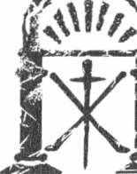
SEKİZİNCİ BÖLÜM
Otel de la Cade
Ekim 2007
45
O O
30 EKİM 2007 SALI
Hal'i görünce Meredith'in kalbi hızla atmaya başladı. Küçük bir sehpanın çevresine yerleştirilmiş üç koltuktan birine yayılmış, daha önce üzerinde olan kot pantolonu ve beyaz tişörtüyle oturuyordu. Mavi kazağını ise açık kahverengiyle değiştirmişti. Uzaktan gözlerken, Hal elini kaldırıp alnına düşen asi saçlarını geriye itti.
Tanıdık hareket karşısında Meredith gülümsedi. Kapıyı arkasından kapanmaya bırakıp ona doğru yürüdü.
Yaklaşınca Hal ayağa kalktı.
"Merhaba," dedi Meredith elini omzuna koyarken. "Zor bir öğleden sonra mıydı?"
"Daha iyilerini yaşamıştım," diyerek yanağından öptü ve garsonu çağırmak için arkasını döndü. "Sana ne ısmarlayabilirim?"
"Dün akşam tavsiye ettiğin şarap güzeldi."
"Bir şişe Domairıe Begude lütfen Georges ve üç bardak."
"Üç bardak mı?" diye sordu Meredith.
Hal'in yüzü gölgelendi. "Buraya gelirken amcama rastladım. Senin için sakıncası olmayacağını düşünüyordu. Daha önce sohbet ettiğinizi söyledi. Seninle bir içki içmek için buluşacağımı söyleyince, o da gelmek istedi."
409
Kate Mosse
"Olamaz," dedi Meredith, Hal'in edindiği izlenimi silmek için. "Beni buraya bıraktıktan sonra nereye gittiğini sordu, ben de emin olmadığımı söyledim. Hepsi bu kadar."
"Tamam."
"Pek sohbet etmek denemez," dedi genç kadın altını çizerek. Ellerini dizlerine dayayıp öne eğildi. "Öğleden sonra neler oldu?"
Hal önce kapıya sonra ona baktı.
"Ne diyeceğim, niçin akşam yemeği için bir masa ayırtmıyorum? Söze başlayıp birkaç dakika sonra amcam gelince yarıda kesmek istemem. Böylece kısa sürede yanından ayrılmamız daha doğal görünür. Ne dersin?"
Meredith sırıttı. "Yemek fikri harika. Öğle yemeğini atladım. Açlıktan ölüyorum."
Hal memnun bir ifadeyle yerinden kalktı. "Hemen dönerim."
Ardından bakan Meredith o kapıya doğru yürürken, geniş omuzlarından hoşlanmıştı. Sanki kadının kendini izlediğini fark etmiş gibi bir an duraklayıp arkasına baktı. Bakışları bir an için kilitlendi. Hal gülümseyerek koridorda gözden kayboldu.
Kâküllerini geriye atma sırası Meredith'e gelmişti. Boğazında bir sıcaklık hissetti, avuçları ıslanmıştı ve böylesi liseli kız saçmalıkları kar-
şısında başını salladı.
Georges ayaklı bir buzluk içinde şarap şişesini masaya getirdi ve la-le biçimi büyük kadehi doldurdu. Adeta sodaymış gibi Meredith birkaç büyük yudum içti ve masadaki içki mönüsünü yelpaze gibi sallayarak serinlemeye çalıştı.
Yerden tavana yükselen raflardaki kitapların hangilerinin, orijinal kütüphaneye ait olup yangından kurtulduğunu düşündü. Bunu Hal'in bilip bilmediğini merak etti. Özellikle matbaacı Bousquet ailesini de hesaba katınca, Lascombe ile Vernier ailelerini birleştiren bir bağ olabileceği fikri aklına geldi. Öte yandan buradaki kitapların tümü ikinci el eski kitap satı-
şından alınmış olabilirdi.
Pencereden dışardaki karanlığa baktı. Bahçenin uzak ucundaki ağaç-
ların bir gölge ordusu gibi sallanıp hareket ettiklerini gördü. Sanki biri 410
Tapınak
pencerenin önünden geçip içeri bakıyormuş gibi üzerinde dolaşan gözleri hissetti. Meredith gözlerini kıstı ama hiçbir şey göremedi.
Ardından birinin gerçekten yaklaşmakta olduğunu hissetti. Ayak seslerini duyabiliyordu. Küçük bir beklenti titremesi belkemiğinden aşağıya kaydı. Pırıl pırıl parlayan gözleriyle gülümseyerek arkaya döndü.
Hal yerine amcası Julian Lavvrence ile göz göze geldi. Adamın ne-fesinde hafif bir viski kokusu vardı. Utanarak yüz ifadesini değiştirdi ve ayağa kalkmaya hazırlandı.
"Bayan Martin," dedi Julian usulca omzuna dokunarak. "Lütfen rahatsız olmayın."
Meredith'in sağ tarafındaki koltuğa yerleşen Julian uzanıp kadehine şarap doldurdu. Hal'in orada oturduğunu söylemesine fırsat vermemişti.
"Sağlığınıza," dedi kadehini kaldırarak. "Yeğenim yine ortadan kayboldu galiba."
"Akşam yemeği için masa ayırtmaya gitti," diye yanıtladı Meredith.
Kibar, açıklayıcı, ama hepsi bu kadar.
Julian gülümsemekle yetindi. Üzerinde açık renk bir keten takım elbise ve üst düğmesi açık bırakılmış mavi bir gömlek vardı. Meredith'in onu gördüğünde olduğu gibi rahat ve denetimi elinde tutan biri gibi görünüyordu ama sanki yüzü biraz kızarmıştı. Meredith'in gözleri koltuğun kolçağında duran sol eline kaydı. Görünüşü kırk gibi olsa da eli ellili yaşların sonuna yaklaştığını gösteriyordu ama yanık tenliydi ve kırmızı deriyi kavrayan eli güçlüydü. Parmağında yüzük yoktu.
Sessizliğin baskısı altında kaldığını hisseden Meredith gözlerini kaldırıp adama baktı. Yeğeni gibi o da dimdik bakıyordu.
Tıpkı Hal'in gözleri.
Kıyaslama yapmamak için kendini zorladı.
Julian kadehini masaya bıraktı. "Tarot kartları hakkında ne biliyorsunuz Bayan Martin?"
Soru karşısında şaşkına dönen Meredith niçin özellikle bu konuyu seçtiğini merak etti. Düşünceleri lobinin duvarından aldığı fotoğrafa, çantasındaki kart destesine, dizüstü bilgisayarındaki etiketlenmiş sitelere, örtüşen müzik notalarına kaydı. Julian bütün bunları bilemezdi ama sanki 411
Kate Mosse
yakalanmış gibi Meredith'in yanakları hafifçe kızardı. Daha da kötüsü Meredith'in kendini husursuz hissetmesinden keyif alıyor gibiydi.
"Öldür ve Yaşa adlı filmdeki Jane Seymour'ın oynadığı rol diyebilirim," dedi şaka yapmaya çabalayarak. "Hepsi bu kadar."
"Ah şu güzel Solitaire," dedi Julian kaşlarını kaldırarak.
Meredith de ona baktı ama yanıt vermedi.
"Doğrusu Tarot tarihi ilgimi çekiyor ama insanın baktırdığı fala göre yaşamını planlama olgusuna inanmıyorum," dedi Julian.
Amcayla yeğenin seslerinin ne kadar birbirine benzediğini düşündü Meredith. Adeta her sözcüğü çok özelmiş gibi yuvarlayarak konuşuyorlardı.
Aralarındaki en büyük fark ise Hal'in duygularını açıkça sergilemesiydi.
Buna karşılık Julian her zaman alaycı bir duruşa sahipti. İğneleyici. Kapıya doğru bir göz attı ama içeri giren olmadı.
"Tarot kartlarını yorumlamanın ardındaki ilkeleri biliyor musunuz Bayan Martin?"
"Pek bildiğim bir konu değil," derken adamın başka bir konuya geç-
mesini istiyordu.
"Öyle mi? Oysa yeğenimden aldığım izlenime göre ilgi alanınıza giriyormuş. Bu sabah Rennes-le-Château'da yürürken tarot kartlarından söz ettiğinizi söyledi." Omzunu silkti. "Belki de yanılıyorum."
Meredith hafızasını yokladı. Tarot kartları hiç aklından çıkmıyordu ama Hal ile konuştuğunu da anımsamıyordu. Julian sabit, sorgulayan gözlerle meydan okurcasına dimdik ona bakıyordu.
Sonunda Meredith soğuk bir sessizliği atlatmak için yanıtlamaya karar verdi. "Bence kartlar rasgele dağıtılıyor ama kartların karıştırılması görünmeyen bir bağlantının görünür hale getirilmesini sağlıyor."
Julian kaşlarını kaldırdı. "Çok güzel anlattınız." Bakışlarını ayırmadan devam etti. "Hiç tarot falı baktırdınız mı Bayan Martin?"
Kendini tutamayarak güldü. "Niçin soruyorsunuz?"
"Yalnızca merak ettim."
Kendisini böylesine huzursuz hissetmesine yol açtığı için öfkelenerek ona baktı. Böyle duygulara kapılmasına izin verdiği için de bir yandan kendine kızıyordu.
412
Tapınak
Aynı anda omzuna bir el dokundu. İrkilerek bakınca Hal'in gülümseyerek yanında durduğunu gördü.
"Üzgünüm, seni ürkütmek istememiştim."
Hal, amcasını başıyla selamladı ve Meredith'in karşısındaki boş koltuğa oturdu. Buz kovasındaki şişeden bardağına şarap doldurdu.
"Tarot kartlarından söz ediyorduk," dedi Julian.
"Öyle mi?" dedi Hal bakışlarını ikisinin üzerinde dolaştırarak. "Neler konuşuyordunuz?"
Gözlerinin içine bakan Meredith mesajı aldı. Kalbi sıkıştı. Tarot konusunda bir tartışmaya katılmak istemiyordu ama Hal'in bunu polis komi-serliğine yaptığı ziyaretten uzak tutacağını düşündüğü belliydi.
"Bayan Martine fal baktırıp baktırmadığını sormuştum," dedi Julian.
Yanıtlamak üzereydi.
Meredith önce ona sonra Hal'e baktı. Birkaç saniye içinde farklı bir sohbet konusu bulamazsa buna devam etmek zorunda kalacaktı.
"Aslında baktırdım," dedi sonunda sıkıcı bir şeyden söz eder gibi.
"Birkaç gün önce Paris'te. İlk ve son kez."
"Keyifli bir deneyim miydi Bayan Martin?"
"Elbette ilginçti. Ya siz Bay Lavvrence? Siz hiç fal baktırdınız mı?"
"Lütfen Julian deyin." Meredith adamın yüzünde eğlenmeyle karışık bir ifade dolaştığını fark etti. İlgi düzeyi artmış mıydı?
"Yoo hayır," dedi Julian. "Bana göre bir şey değil ama tarot kartlarıyla bağlantılı simgeselliğe ilgi duyduğumu itiraf edebilirim."
Kuşkuları doğrulanırken Meredith sinirlerinin gerildiğini hissetti.
Havadan sudan bir sohbet değildi. Julian belirli bir hedefin peşindeydi.
Bir yudum şarap daha içti ve yüzüne anlamsız bir ifade yerleştirdi. "Öyle mi?"
"Örneğin rakamların simgeselliği."
"Dediğim gibi, bu konuyu pek bilmiyorum."
Julian elini cebine attı. Meredith gerildi. Cebinden bir tarot destesi çı-
karması korkunç olurdu. Ucuz bir numaraydı. Aklından geçenleri okuyormuş gibi bir an ona baktı ve cebinden Gauloise paketiyle Zippo çakmağını çıkardı.
413
Kate M o s s e
"Sigara içer misiniz Bayan Martin?" diyerek paketi uzattı. "Ama korkarım dışarıda içmemiz gerekecek."
Kendini aptal yerine koyduğunu böylesine açık ettiği için öfkelendi Meredith ve başını salladı. "Sigara kullanmıyorum."
"Çok akıllıca." Julian sigara paketiyle çakmağı masanın üzerine bırakıp konuşmaya devam etti. "Örneğin Rennes-le-Château Kilisesi'nin rakam simgeselliği büyüleyicidir."
Bir şeyler söylemesini bekleyerek H a l e baktı Meredith ama genç adam konuşmamaya kararlıydı.
"Dikkatimi çekmedi."
"Öyle mi? Özellikle yirmi iki rakamı çok sık karşınıza çıkıyor."
Hal'in amcasına duyduğu antipatiye karşın, Meredith konuya kapıldı-
ğını fark etti. Julian'ın ne anlatacağını merak ediyordu. Yine de ilgileni-yormuş gibi görünmek istemiyordu.
"Nerede?" Sözcükler biraz sertçe dökülmüştü dudaklarından. Julian gülümsedi.
"Girişteki vaftiz kurnası, şeytan Asmodeus heykeli. Gördüğünüzden eminim."
Meredith başını salladı.
"Asmodeus'un, Süleyman'ın tapınağının koruyucularından biri ol-duğu varsayılır. Tapınak MÖ 598 yılında yıkılmıştı. Harflerin rakamsal değerlerini - b e ş artı dokuz artı sekiz- toplarsanız, yirmi ikiye ulaşıyorsunuz. Büyük Arkana destesinde yirmi iki kart bulunduğunu biliyorsunuz sanırım Bayan Martin?"
"Biliyorum."
"İyi o zaman," diye omzunu silkti Julian.
"Sanırım bu rakam başka yerlerde de ortaya çıkıyor, öyle mi?"
"22 Temmuz, bu kilisenin ithaf edildiği St. Marie Magdeleine Yortusu'dur. Ayin haçlarının on üç ve on dördüncü tabloları arasında onun bir heykeli var; ayrıca sunağın arkasındaki renkli camlı üç pencerenin ikisinde de resmi yer alıyor. Başka bir bağlantı ise Tapınak Şövalyelerinin son lideri olan Jacques de Molay. Tapınak Şövalyeleriyle vadideki Bezu'da bağlantılar olduğu sanılıyor. Tam adını söylersek Molay, yoksul Tapınak 414
Tapınak
Şövalyelerinin yirmi ikinci Biiyiik Üstadıydı. Bir de Hz. İsa'nın haçtan haykırışının Fransızca transkripsiyonu var. "Tanrı, niye beni terk ettin!"
Bu cümlede de yirmi iki harf var. Ayrıca yirmi ikinci ilahinin açılış cümlesini oluşturuyor."
Anlattıkları soyut bir biçimde ilgi çekiciydi ama niçin bunlardan söz ettiğini anlayamıyordu. Tepkisini mi ölçmek istiyordu? Tarot konusunda ne kadar bilgisi olduğunu mu öğrenmek istiyordu?
Daha da önemlisi, niçin?
"Son olarak da, Rennes-le-Château rahibi Berenger Sauniere 22 Ocak 1917 tarihinde öldü. Ölümüyle bağlantılı garip bir öykü var. Söylentilere göre bedeni arazisinin terasında bir tahta yerleştirilmiş ve önünden geçen köylüler giysisinin eteğindeki püskülleri koparmışlar. Doğrusunu isterseniz, Waite Tarot destesindeki Tılsımlar Kralı'mn imgesini çağrıştırıyor."
Julian omzunu silkti. "Ya da iki artı iki ile öldüğü yılın rakamlarını toplarsanız, sonuçta..."
Meredith'in sabrı taşmıştı. "Toplama işlemini yapabilirim," dedi alçak sesle ve Hal'e döndü. "Yemek rezervasyonumuz saat kaçta?" diye sordu yüksek sesle.
"Yediyi çeyrek geçe. On dakikamız var."
"Elbette," dedi Julian sözünün kesilmesine aldırış etmeden. "Şeytanın avukatını oynayan biri, herhangi bir sayıyı alıp belirgin bir özelliği oldu-
ğunu gösterecek biçimde bağlantılar kurabilir."
Şişeyi alıp kadehini doldurmak isteyince Meredith eliyle kadehin ağzını örttü. Hal başını salladı. Julian omzunu silkti ve kendi kadehini doldurdu.
"Hiçbirimiz araba kullanacak değiliz," dedi kayıtsızca.
Meredith, Hal'in yumruklarını sıktığını fark etti.
"Yeğenim anlattı mı bilmiyorum Bayan Martin ama Rennes-le-Châ-
teau Kilisesi'nin bir zamanlar bu arazide bulunan bir bina örnek alınarak inşa edildiğini öne süren bir kuram var."
Meredith dikkatini tekrar ona verdi.
"Öyle mi?"
415
Kate Mosse
"Kilisede önemli miktarda tarot imgesi var," diye devam etti Julian.
"Kral, Ermiş, Kâhin... Bunları hatırladığınızdan eminim, tarot ikonografi-sinde, yerleşmiş kilisenin simgesidir."
"Ben gerçekten bilmiyordum."
Julian anlatmayı sürdürdü. "Bazıları biçimsel olarak Büyücü'rmn, Hz.
İsa betimlemesini çağrıştırdığını söyler ve ayin haçları bölümündeki tabloların dördünde kuleler var. Elbette terastaki Magdala Kulesi'ni de hesaba katmak gerekir."
"Ama o hiç benzemiyor," dedi Meredith kendine hâkim olamadan.
Julian öne eğildi. "Neye benzemiyor Bayan Martin?" Adamın sesinden sanki onu suçüstü yakalamış gibi heyecanlandığını hissetti.
"Kudüs," dedi aklına ilk gelen sözcük olarak.
Julian kaşlarını çattı. "Ya da belki gördüğünüz tarot kartlarına benzemiyor."
Masaya sessizlik çöktü. Hal'in kaşları çatılmıştı. Utanca mı kapıl-mıştı yoksa Meredith ile amcası arasındaki gerginliği algılamış ve yanlış
mı yorumlamıştı Meredith karar veremiyordu.
Julian ani bir hareketle kadehindeki şarabı bitirdi, bardağı masaya bıraktı, koltuğu arkaya iterek ayağa kalktı.
"Ben sizi baş başa bırakayım," diye gülümsedi. Sanki birbirleriyle çok keyifli bir yarım saat geçirmişlerdi. "Bayan Martin, burada bizimle kaldı-
ğınız sürenin zevkli geçeceğini umarım." Elini yeğeninin omzuna koydu.
Hal geri çekilmemek için kendini zorladı. "Bayan Martin'den ayrılınca bir dakikalığına çalışma odama uğrar mısın? Seninle görüşmem gereken bazı noktalar var."
"Bu gece mi?"
Julian bakışlarını Hal'den ayırmadı. "Bu gece."
Hal durakladı ve başını sertçe salladı.
Julian gidinceye kadar sessizce oturdular.
"Anlamıyorum sen nasıl..." diye söze başladı Meredith ve sustu. Bir numaralı kural: Hiç kimsenin ailesini eleştirme.
"Ona nasıl dayanabiliyorum, değil mi? Yanıt: Dayanamıyorum. İşlerimi halledince, burdan çekip gideceğim."
416
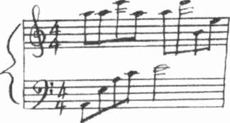
Tapınak
"Gidiş tarihin yaklaşıyor mu?"
Düşünceleri amcasından nefret etmekten babasının yasını tutmaya dönüşünce, öfkesinin yok olduğunu gördü Meredith. Elleri ceplerine gö-
mülmüş, gölgeli gözleriyle ona bakarak ayağa kalktı.
"Sana yemekte anlatırım."
417
F: 27
45
O O
Julian yeni bir şişe açıp kadehini doldurdu ve kopya tarot destesiyle çalışma masasına oturdu.
Sonuçsuz deneme.
Bousquet, yıllardır kopya tarot kartlarını inceliyor, gözünden kaçmış
gizli bir anahtar ya da bir şifre arıyordu. Aude Vadisi ne gelip dağların, kayaların, hatta nehirlerin altına gömülmüş ve keşfedilmemiş hazinelerin söylentilerini duyduğundan beri orijinal kartları aramaya devam ediyordu.
Domaine de la Cade'ı satın alınca tıpkı kendisinden önceki sahipleri gibi, o da Rennes-le-Château'yu saran öykülerin bir aldatmaca olduğuna ve bu öykülerin tam ortasında yer alan on dokuzuncu yüzyılın aforoz edilmiş rahibi Sauniere'nin ruhsaldan daha çok maddesel hazinelerin peşinden koştuğuna inanmıştı.
Ardından orijinal tarot kartlarının yalnızca bir tek mezarın değil, Vizigot İmparatorluğumun tüm hazinesinin yerini gösterdiği söylentileri kulağına gelmişti. Hatta belki MS birinci yüzyılda Romalılar ve Roma çö-
künce de beşinci yüzyılda Vizigotlar tarafından yağmalanan Süleyman'ın tapınağının hazineleri bile bu kartlarda gizli olabilirdi.
Üstelik kartların arazinin bir yerinde gizlendiği de söyleniyordu.
Kazılara sistematik olarak Vizigot tapınağının kalıntılarından başlayıp tüm araziyi elden geçiren Julian cebindeki her kuruşu kartları bulmak için 418
Tapınak
harcamıştı. Arazi yapısı engebeli olduğu için çalışmalar epey pahalıya mal olmuştu.
Hiçbir şey bulunamamıştı.
Bankadan kredi alamaz duruma gelince, otelin kazancını harcamaya başlamıştı. Otelin kâr getiriyor olması çok işine geliyordu, ama bu sektörde para kazanmak kolay değildi. Sabit giderler yüksekti. Kredi geri ödemeleri başladığı zaman otel, henüz ayakları üstünde durmaya başlamıştı. Yine de Julian sürekli para çekiyor; yani, bir cins kumar oynuyordu ve aradığını bulunca her şeyin yoluna gireceğine inanıyordu.
Julian bardağını bir dikişte bitirdi.
Biraz zaman.
Aslında ağabeyinin suçuydu. Seymour daha sabırlı olabilirdi. Karde-
şine güvenebilirdi. İşe karışmamalıydı. Julian neredeyse işi bitiriyordu.
Parayı geri ödeyecektim.
Kendi kendine başını sallayarak Zippo çakmağın kapağını açtı, bir sigara çıkarıp yaktı ve derin bir nefes çekti. Hal karakoldan çıktıktan sonra Couiza'daki komiserle konuşmuştu. Komiser, genç adamın soru sormaktan vazgeçmesinin daha iyi olacağını söylemişti. Julian, yeğeniyle konuşacağı-
na söz vermiş ve komiseri ertesi hafta içki içmeye davet etmişti.
Şişeye uzanıp, bardağına iki parmak içki daha doldurdu. Barda yaptıkları sohbeti düşündü. Bilinçli olarak beceriksizce davranmış, tekniğini gizlememişti, ama Amerikalı kadını yenilgiye uğratmanın en iyi yolu buydu. Kadın tarot hakkında konuşmaya hevesli değildi. Açıkgözdü. Üstelik çekiciydi de.
"Ne? Ne biliyor ki?"
Kulağına gelen sesin masada trampet çalan parmaklarından çıktığını fark etti. Sanki kendisine ait değilmiş gibi eline baktı ve hareketsiz kalmaya zorladı.
Çalışma masasının kilitli çekmecesinde devir belgeleri imzalanıp, Esperaza'daki notere geri götürülmek üzere hazır bekliyordu. Oğlan aptal 419
Kate M o s s e
değildi. Domaine de la Cade'da kalmak istemiyordu. Julian nasıl Seymour'la birlikte iş yapamadıysa, Hal ile de yapamazdı. Planları hakkında Hal ile görüşmek için cenazeden sonra ona zaman tanımıştı.
"Benim suçum değil," dedi yüksek sesle. Sözcükleri ağzında geveli-yordu.
Amerikalı kızla bir daha konuşmalıydı. Eğer kız orijinal Bousquet destesi hakkında bir şey bilmiyorsa, burada ne işi vardı? Kızın varlığı-
nın Seymour'ın kazası, acınacak durumdaki yeğeni ya da otelin parasal konularıyla bağlantılı olmadığını artık biliyordu. Julian ile aynı nedenle burada bulunuyordu. Amerikalı bir şıllığın gelip, kartları elinden alması için bunca eziyete katlanmamıştı doğrusu.
Bakışlarım karanlık ormana dikti. Gece iyice çökmüştü. Julian uzanıp, lambanın düğmesine bastı ve bir çığlık attı.
Ağabeyi tam arkasında duruyordu. Morgda gördüğü gibi cansız, balmumu gibi, yüzü kazadan yaralanmış, gözleri kan çanağına dönmüştü.
Ayağa fırlayınca iskemle yere yuvarlandı. Viski bardağı masanın cilalı yüzeyinde kayıp devrildi.
Julian arkasına döndü.
"Sen olamazsın..."
Oda bomboştu.
Ne olduğunu anlamadan bakışları gölgeleri, pencereyi dolaştı ve sonunda algıladı. Karanlık camda gördüğü kendi solgun yüzünün yansı-
masıydı. Kan çanağına dönmüş gözler ağabeyine değil kendisine aitti.
Julian derin bir soluk aldı.
Ağabeyi ölmüştü. Bundan emindi. İçkisine Rufenol'ü kendisi katmıştı.
Arabayı Rennes-les-Bains dışındaki köprüye kadar götürmüş, epey uğra-
şıp Seymour'ı sürücü koltuğuna oturtmuş ve freni boşa almıştı. Arabanın aşağıya düşüşünü izlemişti.
"Bunu yapmaya sen zorladın," diye homurdandı.
Pencereye bakarak gözlerini kırpıştırdı. Hiçbir şey görünmüyordu.
420
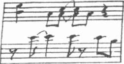
Tapınak
Derin, bitkin bir soluk verip, eğildi ve iskemleyi yerden kaldırdı. Biı süre başı eğik, eklemleri bembeyaz kesilmiş elleriyle iskemlenin arkalığı-
na tutunarak durdu. Kürekkemiklerinin arasından sırtından aşağıya akan ter damlacıklarını hissediyordu.
Sonra kendini topladı. Sinirini bastırmak için bir sigara yakıp karanlık ormana baktı.
Orijinal kartların hâlâ orada olduğundan emindi.
"Bir dahaki sefere," diye mırıldandı. Çok yaklaşmıştı. Bunu hissediyordu. Bir dahaki sefere şansı yaver gidecekti. Emindi.
Bardaktan dökülen viski, masanın kenarından ağır ağır halıya dam-lamaya başlamıştı.
421
45
O O
"Pekâlâ, konuş bakalım," dedi Meredith. "Neler olduğunu anlat bana."
Hal dirseklerini masaya dayadı. "Sözün özü, dava dosyasını yeniden açmak için bir neden görmüyorlar. Karar onları tatmin ediyor."
"Nedir karar?" diye usulca sordu.
"Kaza sonucu ölüm. Babam sarhoşmuş," dedi sertçe. "Arabanın kontrolünü yitirmiş, Salz Nehri üstündeki köprüden uçmuş. Rapora göre alkol sınırını epey aşmıştı."
Pencere önündeki girintilerden birinde oturuyorlardı. Erken saatte restoran boş olduğundan kimse onları duymadan rahatça konuşabilirlerdi.
Titrek mum ışığında Meredith beyaz keten örtünün üzerinden uzanıp, elini tuttu.
"Anlaşılan bir tanık varmış. Yakınlarda oturan Doktor Shelag O'Donnell adlı İngiliz bir kadın."
"Yararı olmaz mı? Kazayı görmüş mü?"
Hal başını salladı. "Sorun da bu zaten. Dosyaya bakılırsa kadın fren sesi ve lastiklerin gıcırtısını duymuş ama kazayı görmemiş."
"Rapor etmiş mi?"
"Hemen değil. Komisere göre birçok sürücü Rennes-les-Bains'e yaklaşırken viraja çok hızlı giriyor. Ancak ertesi sabah cankurtaranı ve polisin nehirden çıkardığı arabayı görünce, ikiyle ikiyi toplamış." Hal bir an durakladı. "Onunla konuşabilirim. Belki hatırladığı bir şeyler vardır."
"Hatırladıklarını polise anlatmamış mıdır?"
422
Tapınak
"Onun güvenilir bir tanık olduğunu düşünmedikleri izlenimine ka-pıldım."
"Hangi açıdan?"
"Açıkça söylemediler, ama kadının içkili olduğunu ima ettiler. Ayrıca yolda lastik izi olmadığından, bir şey duymasının mümkün olmadığını da söylediler. Yani polise göre böyle. Bana kadının adresini vermediler, ama dosyadan telefon numarasını almayı başardım. Daha doğrusu..." Bir an durup devam etti. "Yarın için onu buraya davet ettim."
"Sence iyi bir fikir mi?" dedi Meredith. "Eğer polis, senin bu işe burnunu soktuğunu düşünürse, daha fazla yardımcı olmaktan kaçınmaz mı?"
"Zaten benden bıktılar," dedi sinirli bir tavırla. "Ama doğrusunu istersen, kafamı bir duvara vuruyormuşum gibi geliyor. Artık aldırış etmiyorum. Haftalardır polisin beni ciddiye alması için çalışıyorum. Burada sabırla bekliyorum ama bir sonuca ulaşamıyorum." Yanakları kızararak sustu. "Özür dilerim. Seni de sıkıyorum."
"Önemli değil," derken bazı açılardan Hal ile amcasının ne kadar birbirine benzediğini düşünüyordu. İkisi de kolayca alevleniyor, ardından suçluluk duygusuna kapılıyorlardı. Bu arada, Hal'in böyle bir kıyaslama-dan hoşlanmayacağını da biliyordu.
"Söylediklerimi doğru kabul etmen için hiçbir neden olmadığım biliyorum, ama yapılan resmi açıklamalara da inanmıyorum. Babamın mü-
kemmel biri olduğunu söylemiyorum. Doğrusunu istersen pek fazla ortak noktamız da yoktu. Son derece soğuk ve sakin bir adamdı, olay çıkaracak biri hiç değildi ve içki içtikten sonra asla araba kullanmazdı. Fransa'da bile. Asla."
"Yanlış yargılara varmak çok kolay, Hal," dedi Meredith usulca.
"Hepimiz yapmış olabiliriz," diye ekledi asla yapmadığı halde. "Bir kadeh fazla içeriz, şansımıza güveniriz."
"Söylüyorum sana, babam asla yapmazdı. Şarap içmeyi severdi, ama içki içtiği zaman direksiyona geçmemek konusunda inatçıydı. Bir tek kadeh içse bile." Omuzları aşağıya çöktü. "Annem sarhoş bir sürücü tarafından öldürüldü," diye devam etti daha sakin bir sesle. "Öğleden sonra saat üçte, yaşadığımız köyde beni okuldan almaya geliyordu. Şampanya fıçısına düş-
tüğü bardan çıkan BMW'li bir geri zekâlı hız yapıyormuş."
423
Kate Mosse
Hal'in resmi açıklamayı kabul etmekte niçin bu kadar zorlandığını Meredith şimdi daha iyi anlıyordu, ama olayların farklı olmasını arzulamak ne yazık ki gerçeği değiştirmiyordu. Kendisi de aynı yollardan geçmişti.
Eğer istekler, vaatler olsaydı öz annesi sağlığına kavuşurdu. Bunca olay ve kavga yaşanmazdı.
Hal başını kaldırıp, ona baktı. "Babam içkili olduğu zaman araba kullanmazdı."
Meredith hafifçe gülümsedi. "Ama rapor alkollü olduğunu gösteriyor-sa..." Soruyu tamamlamadan bıraktı. "Bu konuyu açtığın zaman polis ne dedi?"
Hal omzunu silkti. "Benim olayların etkisinde kaldığım ve doğru dü-
rüst düşünemediğime inandıkları belli."
"Pekâlâ, şimdi başka açılardan bakalım. Tahliller hatalı olamaz mı?"
"Polis olmaz diyor."
"Başka şeyler de araştırmışlar mı?"
"Ne gibi?"
"Örneğin uyuşturucu?"
Hal başını salladı. "Gerekli olduğunu düşünmemişler."
Meredith düşünceye daldı. "Çok hızlı gidiyor olamaz mıydı? Tam virajda arabanın kontrolünü yitirmiş olamaz mı?"
"Yolda lastik izi yokmuş. Ayrıca bu görüş, kanındaki alkolü açıklamaya yetmiyor."
Meredith bakışlarını ona dikti. "Öyleyse ne Hal? Ne demek istiyorsun?"
"Ya raporlar sahte ya da birisi içkisine ilaç kattı."
Meredith'in yüz ifadesi duygularım eleverdi.
"Bana inanmıyorsun," dedi Hal.
"Bunu demedim," diye atıldı. "Ama bir düşün Hal. Böyle bir şey mümkün olsa bile, kim yapar bunu ve niçin yapar?"
Hal gözlerini kırpmadan uzun süre yüzüne bakınca, Meredith ne demek istediğini anladı.
"Amcan mı?"
Hal başıyla onayladı. "Öyle olmalı."
424
Tapınak
"Ciddi olamazsın," diye itiraz etti. "Yani demek istiyorum ki, aynı fikirleri paylaşmadığınızı biliyorum ama... bu durumda bile... onu suçlamak..."
"Saçma gibi görünüyor, ama biraz düşün Meredith. Başka kim olabilir?"
Meredith başını salladı. "Bu düşüncenden polise de bahsettin mi?"
"Açıkça söylemedim ama dosyanın Ulusal Jandarma Teşkilatı'na gös-terilmesini istedim."
"Bu ne anlama geliyor?"
"Ulusal Jandarma Teşkilatı cinayetleri araştırır. Şu anda bu olay bir trafik kazası olarak görülüyor. Ama eğer Julian ile bir bağlantısı olduğunu kamtlayabilirsem, bir kez daha düşünmelerini sağlayabilirim." Dikkatlice yüzüne baktı. "Eğer sen Doktor O'Donnell ile konuşursan, eminim her şeyi açıkça anlatacaktır."
Meredith arkasına yaslandı. Bu çılgınca bir senaryoydu. Hal'in se-naryonun gerçek olduğuna kendini yüzde yüz inandırdığını görebiliyordu.
Onun duygularını anlıyordu, ama yanıldığından da emindi. Birini suçlamaya, öfkesini çıkarmaya ve kayıp duygusuyla başa çıkmaya ihtiyacı vardı.
Gerçek ne kadar kötü olursa olsun, bilmemenin daha da kötü olduğunu kendi deneyimlerinden biliyordu. Geçmişi geride bırakıp, ileriye gitmenizi olanaksızlaştırıyordu.
"Meredith?"
Hal'in dikkatle baktığını fark etti. "Özür dilerim, düşünüyordum."
"Yarın Doktor O'Donnell gelince, burada olabilir misin?"
Meredith duraksadı.
"Çok sevinirim."
"Sanırım," dedi sonunda. "Elbette."
Hal rahatlayarak içini çekti. "Teşekkür ederim."
Garson yanlarına gelince hava değişti, daha az yoğun, daha normal bir buluşma biçimini aldı. İkisi de biftek ısmarlayınca Hal etle iyi giden yerel bir kırmızı şarap seçti. Bir süre birbirlerine kaçamak bakışlarla baktılar, beceriksizce gülümsediler, ne diyeceklerini bilemediler.
Sessizliği Hal bozdu. "Her neyse, benim sorumlarımdan bahsettiğimiz yeter. Şimdi, bana, gerçekten neden burada bulunduğunu söyler misin?"
Meredith kaskatı kesildi. "Efendim?"
425
Kate Mosse
"Debussy hakkındaki kitap için değil, öyle değil mi? Ya da en azından yalnızca kitap için değil."
"Neden böyle düşünüyorsun?" Sesi istediğinden daha sert çıkmıştı.
Hal kızardı. "Örneğin bu sabah ilgini çeken şeyler pek Lilly Debussy ile ilgili değildi. Rennes-les-Bains'in tarihi ve burada yaşayanlarla ilgile-niyorsun." Sırıtarak devam etti. "Ayrıca piyanonun üzerindeki fotoğraf yok olmuş. Sanırım biri ödünç almış."
"Benim aldığımı mı düşünüyorsun?"
"Bu sabah yakından inceliyordun..." dedi özür dileyen bir gülümseyişle. "Ayrıca amcamla... emin değilim, belki yanılıyorum, ama sanki onu denetlemeye gelmişsin gibi... Birbirinizden pek hoşlanmıyorsunuz."
Aniden susuverdi.
"Amcanı denetlemeye geldiğimi mi düşünüyorsun? Şaka yapıyorsun değil mi?"
"Şey, olabilir, belki," diyerek omzunu silkti. "Hayır bilmiyorum."
Meredith şarabından bir yudum aldı.
"Seni incitmek istemedim."
Meredith elini kaldırıp sözünü kesti. "Bakalım doğru anlamış mıyım.
Babanın ölümünün kaza olduğuna inanmadığın için tahlil raporlarıyla oy-nanmış olabileceğini, içkisine ilaç karıştırılabileceğini ve arabasının zorla yoldan çıkarılabileceğini..."
"Evet ama..."
"Sözün kısası, babanın ölümünde amcanın parmağı olabileceğinden şüpheleniyorsun. Haklı mıyım?"
"Şey böyle söyleyince... biraz..."
Meredith konuşurken sesi yükselmeye başladı. "Yani ben ortaya çı-
kınca, akıl almaz bir nedenle herhangi bir şekilde işin içinde olduğumu düşünüyorsun öyle mi? Bunu mu demek istiyorsun Hal? Yani ben bir çeşit Nancy Drevv filan mıyım?"
Arkasına yaslanıp gözlerini ona dikti.
Hal'in yüzü hafifçe kızardı. "Seni incitmek istemedim. Babamın nisan ayında, hani şu sana anlattığım konuşmadan sonra, söylediği bazı şeyler Julian'ın burayı yönetme biçiminden rahatsız olduğu izlenimini verdi bana. Bir şeyler yapmaya hazırlanıyordu."
426
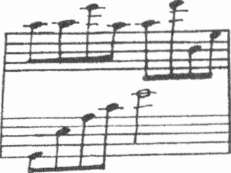
Tapınak
"Eğer böyle olsaydı, baban, sana açıkça söylemez miydi? Eğer bir sorun varsa, nasıl olsa seni de etkileyecekti."
Hal başını salladı. "Babam böyle biri değildi. Dedikodudan, söylentilerden nefret ederdi. Gerçekleri tam olarak bildiğinden emin olmadıkça, bana bile bir şey söylemezdi. Ona göre suçu kanıtlanıncaya kadar kişi masumdur."
Meredith düşündü. "Pekâlâ, bunu anlıyorum. Ama yine de sen aralarında bir şeylerin ters gittiğini algıladın değil mi?"
"Belki önemsiz bir konuydu, ama bana ciddiymiş gibi geldi. Yalnızca para değil, Domaine de la Cade ve arazinin geçmişiyle ilgili..." Omzunu silkerek sözünü tamamladı. "Özür dilerim Meredith, yeterince iyi anlata-madım."
"Sana hiçbir şey bırakmadı mı? Bir dosya? Herhangi bir not?"
"İnan bana, her tarafı aradım. Hiçbir şey yok."
"Ve amcanı araştırması için birini işe aldığı sonucuna vardın. Bakalım bir şeyler ortaya çıkacak mı?" Susup yüzüne baktı. "Niçin bana sormadın?" derken gözleri öfkeyle parlıyordu, ama niçin sormadığını da gayet iyi biliyordu.
"Çünkü bugün öğleden sonra babamı düşünürken, böyle olabileceği aklıma geldi."
Meredith kollarını kavuşturdu. "Yani dün akşam barda benimle ko-nuşmaya başlamanın nedeni bu değildi?"
"Elbette hayır!" dedi Hal, gerçekten şaşırmıştı.
"Niçin öyleyse?" diye ısrar etti Meredith.
Hal kızardı. "Tanrım, Meredith biliyorsun. Açıkça belli değil mi?"
Bu kez kızarma sırası Meredith'e gelmişti.
427
66
OO
Hal yemeğin parasını ödemekte ısrar etti. Faturayı imzalamasını izleyen Meredith teknik olarak otelin sahibiydi, ama amcasının parayı ödemesini isteyip istemeyeceğini düşündü. Onun için hissettiği endişeler su yüzüne çıktı.
Restorandan çıkıp lobiye doğru yürüdüler. Merdivenin yanında Hal elini tuttu.
El ele, sessizce üst kata çıktılar. Meredith çok sakindi, sinirli ya da kararsız değildi. Bunu isteyip istemediğini düşünmek zorunda da değildi.
Kendini iyi hissediyordu. Nereye gideceklerini bile konuşmamışlar, en iyi-sinin Meredith'in odası olduğuna kendiliğinden karar vermişlerdi. Şu anda onlar için en doğrusu buydu.
Başka bir müşteriye rastlamadan birinci kat koridorunun sonuna geldiler. Sessiz koridorda Meredith'in anahtarı gürültüyle kilitte döndü ve kapı açıldı. Neredeyse resmi sayılacak bir duruşla el ele içeri girdiler.
Dolunayın ışığı pencereden içeri girip, zeminde desenler çiziyor, aynanın ve masanın üzerinde duran fotoğrafın çerçevesinden yansıyordu.
Bunlar Anatole ve Leonie Vernier ile Isolde Lascombe'un fotoğraflarıydı.
Meredith lambayı yakmak üzere uzandı.
"Yapma," dedi Hal alçak sesle.
Usulca ensesinden tutup kendine doğru çekti. Tıpkı Rennes-les-Bains'deki kilisenin dışında olduğu gibi Meredith, onun yün ve sabun karı-
şımı kokusunu içine çekti.
428
Tapınak
Kırmızı şarabın izini taşıyan dudakları birleşti. İlişkilerinin, arkadaş-
lıktan farklı bir yöne kayışını belirtir gibi önce yavaşça ve kararsızca...
Meredith bir sıcaklığın ayaklarından başlayarak, bacaklarına, midesine, oradan başına kadar yayıldığını hissetti.
Hal eğilip tek bir hareketle onu kollarına aldı, yatağa taşıdı. Meredith'in elindeki anahtar kalın halıya düştü.
"Ne kadar hafifsin," diye fısıldadı ensesini öperken.
Usulca yatağın üzerine bıraktı ve sansürden korkan bir Hollywood yıldızı gibi ayakları sıkıca yere basarak yanına oturdu.
"Sen..." diye başlayıp, durdu, tekrar denedi. "Emin misin?"
Meredith parmağını onun dudaklarına değdirdi. "Şışşşt."
Ağır ağır gömleğinin düğmelerini çözdü ve erkeğin eline yol gösterdi.
Hal'in soluğunu tuttuğunu fark etti ve odayı dolduran alacalı gümüş rengi ışıkta göğsünün inip kalkışını gördü. Maun yatağın üzerinde bağdaş kurup oturdu, uzanıp onu öperken koyu renk saçları yüzüne döküldü. Boy fark-ları artık yok olmuştu.
Hal kazağını çıkarmaya çalışırken Meredith ellerini tişörtünün altına sokunca ne yapacağını şaşırdı ve gülerek ayağa kalkıp soyundular.
Meredith hiç çekingen değildi. En doğal, en doğru şeyi yapıyorlardı.
Rennes-les-Bains'de olmak zamanın dışında olmak gibiydi. Sanki birkaç günlüğüne normal yaşamının dışına çıkmıştı, sonucunu düşünmeden hareket ediyordu, farklı kuralların geçerli olduğu bir dünyada yaşıyordu.
Meredith, üzerindeki son giysiyi de çıkardı.
"Off!" dedi Hal.
Meredith, ona doğru bir adım attı, çıplak vücutlarının birbirine değmesi öylesine mahrem, öylesine şaşırtıcıydı ki. Erkeğin onu ne çok arzuladığını, ama beklemeye razı olduğunu, kendi hızıyla ilerlemesine izin verdiğini hissediyordu.
Meredith, genç adamın elini tuttu ve yatağa doğru çekti. Bedenlerinin verdiği sıcaklığa karşılık keten çarşaflar ütülü ve serindi. Bir dakika kol kola tıpkı taş mezardaki bir şövalye ile hanımefendisi gibi yan yana yattı-
lar. Hal dirseğinin üzerinde doğruldu ve saçını okşamaya başladı.
429
Kate Mosse
Dokunuşlarıyla rahatlayan Meredith derin bir soluk aldı. Şimdi er-keğin eli aşağıya doğru iniyor, omzunu, boynunu, göğüslerini okşuyor, parmaklarını onun parmaklarına geçiriyor, dudakları ve dili vücudunun üzerinde fısıldıyordu.
Meredith arzu ateşinin tüm bedeninde, damarlarında, kemiklerinde yandığını hissediyordu. Ona yaklaşırken öpücüklerden daha fazlasını istiyordu. Bekleyiş dayanılmaz olurken, Hal pozisyonunu değiştirdi. Genç adamın buz mavisi gözlerine bakan Meredith, bir an için kendisinin nasıl biri olduğuyla ilgili tüm olasılıkların onun gözlerinden yansıdığını gördü.
"Emin misin?"
Meredith gülümseyerek ona yol gösterdi.
"Her şey yolunda," diye fısıldadı Meredith.
Bir süre birbirlerinin kolları arasında olmanın verdiği huzurla hareket-sizce yattılar. Hal önce yavaş, sonra hızla hareket etmeye başladı. Meredith ellerini erkeğin sırtına koydu; kanının damarlarında hızla aktığını hissetti.
Erkeğin gücünü, kollarının kuvvetini hissedebiliyordu. Dilini Hal'in dudaklarının üzerinde dolaştırdı.
Duyduğu arzu ve ihtiyaçtan Hal daha da hızlandı ve solukları sıklaştı.
Yaşadığı anın heyecanına kapılarak Meredith ona daha sıkı sarıldı. Hal, onun adını haykırdı, titredi ve bir anda hareketsiz kaldılar.
Meredith'in şakağında atan nabzı yavaşladı. Erkeğin ağırlığı altında ezildiğini hissetti, ama kıpırdamadı. Kollarını Hal'in bedenine sarıp, gür saçlarını okşadı. Erkeğin yüzünün ıslandığını, sessizce ağladığını fark etmesi zaman aldı.
"Oh, Hal," diye mırıldandı acıyarak.
"Bana kendinden söz et," dedi Hal daha sonra. "Sen, benim hakkımda çok şey biliyorsun, niçin burada olduğumu biliyorsun, ama ben senin hakkında neredeyse hiçbir şey bilmiyorum Bayan Martin."
Meredith güldü. "Ne kadar resmileştiniz, Bay Lavvrence," diyerek elini erkeğin göğsünde dolaştırdı.
Hal parmaklarını yakaladı. "Ciddiyim! Nerede yaşadığını bile bilmiyorum. Nereden geldiğini, ailenin ne iş yaptığını da. Haydi anlat."
430
Tapınak
Meredith parmaklarını onun parmaklarına kenetledi. "Pekâlâ. Yaşam öyküsü geliyor. Milwaukee'de büyüdüm, on sekiz yaşına kadar orada yaşa-dım, ardından Kuzey Carolina'da üniversiteye gittim. Lisansüstü araştırmalarımı orada yaptıktan sonra St. Louis ve Seattle dışında iki fakültede öğretmenlik yaptım. Bu arada Debussy nin yaşam öyküsü kitabını bitir-mek için sponsor arıyordum. Birkaç yıl sonraya gelelim. Beni evlat edinen aile Milvvaukee'den, eski okulumun yakınındaki Chapel Hill'e taşındı. Bu yılın başında Kuzey Carolina Üniversitesi'nden pek uzak olmayan özel bir üniversitede iş teklifi aldım ve sonunda bir yayıneviyle anlaştım."
"Evlat edinen aile mi?"
Meredith içini çekti. "Öz annem Jeannette, bana bakamayacak durumdaydı. Mary uzaktan akrabam olur. Jeannette'in hastalandığı zamanlar onların yanında kalırdım. İşler kötüye gidince, sürekli kalmaya başladım.
Birkaç yıl sonra öz annem ölünce, beni resmen evlat edindiler."
Yalın, özenle seçilmiş sözcükler, gece yarısı gelen telefonlara, beklenmedik ziyaretlere, sokaklardaki haykırışlara, çocuk Meredith'in hasta ve geçimsiz annesine karşı hissettiği sorumluluk yüküne haksızlık eder gibiydi. Olayları sıradan bir şeymiş gibi aktarması da bunca yıl sonra hâlâ taşıdığı suçluluk duygusunu, annesinin öldüğünü duyunca üzülmek yerine rahatladığını hissetmesini açıklamaya yetmiyordu.
Bu yüzden kendini affetmiyordu.
"Zorlu bir yaşam," dedi Hal.
Meredith, genç adamın İngilizlere özgü küçümsemesine gülümsedi ve biraz daha sokuldu ona.
"Şanslıydım," diye devam etti. "Mary harika bir kadındır. Keman ve ardından piyano çalmaya beni o yöneltti. Her şeyi ona ve Bill'e borçluyum."
Hal sırıttı. "Yani gerçekten Debussy'nin yaşamöyküsünü mü yazıyorsun?" diye dalga geçti.
Meredith şaka yollu koluna vurdu. "Elbette yazıyorum!"
"Ama burada bulunmanın nedeni yalnızca bu değil," dedi Hal sonunda. Başını çevirip, odanın öte yanındaki çerçeveli fotoğrafa baktı. "Bu konuda haklıyım, değil mi?"
431
Kate Mosse
Meredith çarşafı çekerek yerinde doğruldu ve yalnız omuzları açıkta kaldı.
"Evet haklısın."
Henüz konuşmaya hazır olmadığını hisseden Hal de doğruldu ve ayaklarını yere indirdi. "İstediğin bir şey var mı? İçecek bir şey?"
"Bir bardak su fena olmaz."
Erkeğin banyoya gitmesini, birkaç saniye sonra elinde iki diş fırçası bardağıyla dönüp mini bardan su şişesini çıkarmasını izledi. Hal tekrar yatağa girdi.
"İşte burada."
"Teşekkürler," dedi Meredith ve şişeden kocaman bir yudum aldı.
"Şimdiye kadar öz annemin ailesinin Birinci Dünya Savaşı sırasında ya da sonrasında Fransa'nın bu yöresinden Amerika'ya göç ettiği dışında hiçbir şey bilmiyordum. Dedemin babası olduğundan emin olduğum bir gencin, Fransız askeri üniformasıyla 1914 yılında, Rennes-les-Bains Meydanı'nda çekilmiş bir fotoğrafı var. Anlatılanlara göre bu genç Milvvaukee'ye gelmiş, ama elimde bir soyadı olmadığı için hakkında doğru dürüst bir şey öğrenemedim. Milwaukee'de on dokuzuncu yüzyılın başlarından itibaren Avrupalı nüfus epey fazlaymış. İlk yerleşen Avrupalı, Jacques Veau adlı bir Fransız tüccarmış. Milvvaukee, Menomonee ve Kinnickinnic nehirlerinin birleştiği noktadaki dağlarda bir dükkân açmış. Yani anlatılanların doğru olabileceğini düşünüyorum."
Gerçeklere bağlı kalarak, Domaine de la Cade'a gelince öğrendiği her şeyi anlattı. Lobideki resmi niçin aldığından, büyükannesi Lousia Martin'den miras kalan müzik notasından söz etti, ama tarot kartlarına değinmedi. Biraz önce barda, bu konu hakkında yeterince keyifsiz bir sohbet yapmışlardı ve şu anda Hal'e amcasını anımsatmak istemediğinden emindi.
"Yani kimliği bilinmeyen askerin Vernier ailesine mensup olduğunu mu düşünüyorsun?" diye sordu Hal, Meredith konuşmaktan yorulup su-sunca.
Genç kadın başını salladı. "Fiziksel benzerlikler çok fazla. Ten rengi, yüz hatları. Genç bir kardeş ya da bir yeğen olabilir, ama tarihleri ve yaşını 432
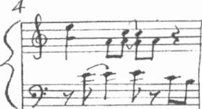
Tapınak
göz önüne alınca onların soyundan geldiğini düşünüyorum." Bir an durdu ve yüzüne geniş bir gülümseme yayıldı. "Yemeğe inmeden önce Mary'den bir e-posta geldi. Milwaukee'nin Mitchell Point Mezarlığında Vernier soyadlı birinin yattığının kaydını bulmuş."
Hal gülümsedi. "Sence babası Anatole Vernier mi?"
"Bilmiyorum. Bir sonraki adım bu," diyerek içini çekti. "Leonie'nin oğlu olabilir mi?"
"O zaman soyadı nasıl Vernier olur?"
"Eğer Leonie evlenmemişse olur."
Hal başını salladı. "Haklısın."
"Öyleyse bir anlaşma yapalım. Yarın Doktor O'Donnell ile görüştükten sonra Vernier'leri araştırmamda yardımcı olacaksın."
"Anlaştık," dedi Hal. Meredith'in gerildiğini hissediyordu. "Bu konunun üzerinde çok fazla durduğumu düşünüyorsun, ama burada olmanı istiyorum. Saat onda gelecek."
"Pekâlâ," diye mırıldanırken, iyice uykusu gelmişti. "Dediğin gibi, başka bir kadınla daha rahat konuşabilir."
Gözlerini açık tutmak için çabalıyordu. Yavaş yavaş Hal'den uzaklaş-
tığını hissetti. Gümüş rengi ay, siyah Midi göğünde yolculuğunu sürdürü-
yordu. Aşağıdaki vadiden, geçen saatleri bildiren çan sesleri geldi.
433
F: 28
45
O O
Düşünde Meredith lobideki piyanonun önünde oturuyordu. Tuşların serinliği ve çaldığı melodi tanıdık geliyordu. Louisa'nın imza parçasını her zamankinden çok daha iyi çalıyordu, sevimli ama akılda kalıcı.
Sonra piyano ortadan kayboldu; Meredith dar ve boş bir koridorda yürümeye başladı. Koridorun sonunda bir ışık ve kullanılmaktan ortası çökmüş taş basamaklar vardı. Gitmek için geri döndü, ama olduğu yerde durduğunu fark etti. Burasının Domaine de la Cade'ın içinde bir yer oldu-
ğunu biliyor, ama evin ya da bahçenin neresinde bulunduğunu çıkaramı-
yordu. Tam bir kare biçimindeki ışık, Meredith yanından geçerken tıslayıp titreyen duvardaki gaz lambasından geliyordu. Merdivenin tepesinde, tam karşısında bir av sahnesini gösteren eski ve tozlu goblen bir duvar halısı asılıydı. Adamların yüzlerindeki acımasız ifadelere, mızraklarının üzerindeki kan lekelerine baktı bir an. Düş gören gözleriyle bakarken adamların bir hayvan avlamakta olmadıklarını fark etti. Ne bir ayı, ne bir yabandomuzu, ne de bir kurt. Bunların yerine çatallı arka ayakları üzerinde duran, insanı andıran yüzünde öfke ifadesi okunan siyah bir yaratık vardı. Pençelerinin ucu kırmızı bir şeytan.
Asmodeus.
Arkada alevler görünüyordu. Orman yanıyordu.
Düşünde; hem ağırlaşan, hem de ağırlığını yitiren elleriyle eski tahta kapıyı iterken, Meredith inledi ve yatağında yer değiştirdi. Gaz lambasının 434
Tapınak
ya da ay ışığının yarattığı aydınlıkta zemindeki gümüş tozundan oluşan halı görünüyordu.
Hava durgundu. Aynı zamanda oda, boş bırakılmış bir yer gibi nemli ya da soğuk değildi. Sanki gelecekte gibiydi. Şimdi Meredith tekrar piyano sesi duyuyordu, ama bu kez ses çarpılmış, bozulmuştu. Bir panayırın ya da atlıkarıncanın ürküten, kötü sesi.
Solukları hızlandı. Soğuk metal kilide uzanırken, uykulu elleri çar-
şaflara sarıldı.
Kapıyı itip açtı. Taş basamağın üzerinden atladı.
Ne kuşlar havalandı, ne de kapının ardına gizlenmiş birilerinin sesi geldi. Şimdi bir çeşit küçük kilisenin içinde duruyordu. Yüksek tavanlı, zemini taş döşeli, sunağı ve renkli cam pencereleri olan bir kilise. Duvarı kaplayan resimlerin tarot kartlarından alındığı belliydi. Bir tapınak... Mutlak bir sessizlik vardı. Yalnızca kendi ayak seslerinin yankısı sessizliği bozuyordu. Ne var ki, ağır ağır hava fısıldamaya başladı. Karanlıkta sesler, gürültüler duyuyordu. En azından sessizliğin ardında sesler vardı ve şarkı söyleniyordu.
Meredith ilerlerken sanki ışıkta kaybolmuş, ruhlar geçmesi için yol açıyormuş gibi havanın ikiye ayrıldığını hissetti. Tapmağın içi soluğunu tutmuş, onun yüreğinin atışlarına tempo tutuyordu.
Dört pencerenin tam ortasında sekizgen bir duvarın içine yerleştirilmiş sunağa yaklaştı. Yerde siyaha boyanmış bir taşın üzerinde duruyordu.
Taşın çevresinde yere kazınmış harfler vardı.
Bana yardım edin.
Orada biri vardı. Sessiz karanlıkta bir şey hareket ediyordu. Meredith çevresindeki boşluğun daraldığını, kendi içine geçtiğini hissetti. Hiçbir şey göremiyordu, ama orada biri olduğunu biliyordu. Havanın dokusunda canlı, soluk alan bir varlık vardı. Onu daha önce de görmüştü... köprünün altında, yolda, yatağının ayakucunda. Hava, su, ateş ve şimdi de toprak.
Tarot'un dört grubu tüm olasılıkları içeriyordu.
Duyun beni. Dinleyin beni.
435
Kate M o s s e
Meredith dingin ve huzur dolu bir yere doğru düşüyordu. Korkmuyordu. Artık kendisi değildi, bedeninin dışında durmuş içeri bakıyordu. Şimdi kendi uykulu sesini işitti.
"Leonie?"
Örtüye sarınmış figürün çevresindeki karanlıkta farklı bir nitelik vardı, rüzgârı andıran bir hava hareketi. Yatağın ayakucunda dururken, görüntü hafifçe başını oynatmıştı. Kapüşonu arkaya kayarken cismi olmayan bakır rengi bukleler aşağıya sarkmıştı. Teni yarı saydamdı. Şeffaf gözleri yeşildi. Maddesi olmayan biçim. Pelerinin altında uzun siyah bir giysi. Formu olmayan şekil.
Ben Leonie yim.
Meredith sesleri beyninde duyuyordu. Eski zamanlardan kalma genç bir kız sesi. Yine odanın havası değişti. Sanki boşluk rahatlayarak içini çekmişti.
Uyuyamıyorum. Biri beni buluncaya kadar asla uy uyamayacağım.
Gerçeği dinleyin.
"Hangi gerçeği? Ne hakkında?" diye fısıldadı Meredith. Işık değişiyor, gevşiyordu.
Öykü kartlarda.
Bir hava akımı, ışığın parçalanması, geri çekilen bir şeyin, birinin pırıltısı. Atmosfer yine değişti. Leonie'nin geride tuttuğu bir tehdit vardı artık karanlığın içinde. Hayaletin nazik varlığı yok olmuş, yerini yıkıcı bir şey almıştı. Bir kötülük. Baskıcı bir soğukluk Meredith'e yaklaşıyordu.
Denizdeki sabah sisi gibi tuz, balık ve dumanın keskin kokusu. Yine tapı-
nağa geri dönmüştü. Neden kaçması gerektiğini bilmiyordu, ama kaçmak gereksinimi duyuyordu. Ağır ağır kapıya doğru gerilediğini fark etti.
Arkasında bir şey vardı. Siyah bir görüntü ya da bir çeşit yaratık...
Meredith onun soluğunu ensesinde hissediyor, buz gibi havada ağzından çıkan beyaz buharı görüyordu, ama taş, orta bölüm daralıyordu. Ahşap kapı gitgide küçülüyor ve uzaklaşıyordu.
Bir, iki, üç, hop! Hazır ol ya da olma, seni almaya geliyorum.
Gölgelerin arasında hız kazanan, sıçramaya hazırlanan bir şey ayaklarına yaklaşmıştı. Kapıldığı korku bacaklarına güç verince Meredith koşmaya 436
Tapınak
haşladı. Spor ayakkabıları döşeme taşlarının üzerinde kayıyordu. S u l u k I. m hemen arkasından geliyordu.
Neredeyse ulaştım.
Kendini kapıya doğru atınca, omzunun çerçeveye çarptığını ve acının kolundan aşağıya indiğini hissetti. Yaratık tam arkasındaydı, kürkünün tüyleri batıyor, demir ve kan kokusu, adeta eriyip, Meredith'in cildine, kafasına, ayaklarının tabanına nüfuz ediyordu. Kilidi açmaya çalıştı, kur-caladı, kendine doğru çekti, ama kapı açılmadı.
Omzunun üstünden arkaya bakmamaya, mavi ürkütücü gözlerinin ba-kışına yakalanmamaya özen göstererek kapıyı yumrukladı. Çevresindeki sessizliğin derinleştiğini hissetti. Yaratığın ıslak, soğuk ve sert kollarının boynuna yaklaştığını hissetti. Denizin kokusu onu ölümcül derinliklere doğru çekiyordu.
437
45
O O
"Meredith! Meredith! Her şey yolunda. Güvendesiniz, her şey yolunda."
Sıçrayarak uyandı ve soluk almaya çalıştı. Bedenindeki tüm kaslar gerilmiş, tüm sinirler kesilmişti. Pamuklu çarşaflar iç içe geçmişti. Parmakları kaskatı kesilmişti. Sanki yaratığın öfkesi teninden içeri sızmış
gibi yiyip bitiren bir öfkeyle kaplandığını hissetti.
"Meredith her şey yolunda! Ben yanındayım."
Şaşkınlık içinde kendini kurtarmaya çalışırken, sımsıkı saran sıcak bedenin zarar değil, güven vermeye çalıştığını hissetti.
"Hal."
Omuzlarındaki gerginlik yok oldu.
"Bir karabasan gördün," dedi Hal. "Hepsi bu. Bitti artık."
"O kız buradaydı. Kız buradaydı... sonra... o şey geldi ve..."
"Şışşt, bitti artık," dedi Hal tekrar.
Meredith dikkatle ona baktı. Elini uzatıp, parmaklarını yüzünde do-laştırdı.
"Kız geldi... ve sonra onun peşinden gelen..."
"Burada bizden başka kimse yok. Yalnızca bir karabasan. Artık sona erdi."
Gölgelerin arasından her an birinin ortaya çıkmasını bekliyor gibi Meredith çevresine bakındı. Aynı zamanda rüyanın da bittiğini biliyordu.
Hal'in kendisine sarılmasına izin verdi. Sıcak ve güçlü bedeniyle kendine 438
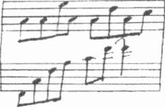
Tapınak
çekti, sımsıkı göğsüne bastırdı. Soluk alıp, verirken kaburgalarının inip kalktığını hissetti.
"Onu gördüm," diye mırıldanırken Hal'den çok kendisiyle konuşur gibiydi.
"Kimi?" diye fısıldadı Hal.
Meredith yanıtlamadı.
"Her şey yolunda," diye tekrarladı Hal. "Hadi uyu artık."
Alnını okşayıp, onlarla birlikte yaşamaya başladığı zaman tıpkı Mary'nin yaptığı gibi kâküllerini geriye atıp, karabasanlarını yatıştırmasını bekledi.
"Kız buradaydı," diye yineledi.
Hal'in elinin nazik, tekrarlanan hareketiyle kapıldığı korkudan sıy-rıldı. Sıcaklık ve duyguları geri gelirken, gözkapaklarıyla birlikte kolları, bacakları ve bedeni ağırlaştı.
Saat sabahın dördü.
Bulutlar ayı örtünce her taraf karanlığa gömülmüştü. Birbirini tanı-
mayı öğrenen sevgililer sarmaş dolaş, sabahın güneş doğmadan önceki koyu maviliğine gömülerek uykuya daldılar.
439
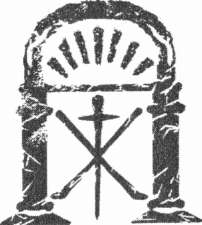
DOKUZUNCU BOLUM
Orman
Ekim-Kasım 1891
45
O O
23 EKİM 1891 CUMA
Ertesi sabah Leonie uyanınca uykuya dalmadan önce olduğu gibi ak-lına ilk gelen düşünce Victor Constant oldu.
Temiz havayı yüzünde hissetmek için aceleyle giyindi ve bahçeye çıktı. Bir gün önceki fırtınanın belirtileri ortadaydı. Dallar kırılmış, sarsıcı rüzgâr yaprakları savurmuştu. Şimdi ise her şey durulmuştu ve şafağın pembe göğü pırıl pırıldı. Uzakta, Pirene Dağları'nın tepesindeki gri fırtına bulutları kötü havanın tekrar geleceğini bildiriyordu.
Gölün çevresinde yürüdü, dalgalı suya bakan küçük burunda biraz durakladı ve eve döndü. Giysisinin eteği çiyden ıslanmış parlıyordu. Ayakları ıslak otlar üzerinde neredeyse hiç iz bırakmıyordu.
Dışarı çıkarken kilitlemediği ön kapıdan içeri girip, çizmelerini kalın paspasa sildi. Kapüşonunu geriye attı, pelerininin tokasını çözüp, metal askıya astı.
Kırmızı-siyah karoların üstünden yemek salonuna doğru yürürken, Anatole'ün kahvaltı için aşağıya inmemiş olduğunu umuyordu. Gerçi Isolde'ün sağlığı konusunda kaygılıydı, ama Carcassonne'dan kararlaştırılandan ön-ce döndükleri için hâlâ yüzü asıktı ve ağabeyine kibar davranmak zorunda kalmak istemiyordu. Kapıyı açınca içeride yalnızca masanın ortasındaki metal nihaleye kırmızı-mavi desenli emaye kahve demliğini yerleştiren hizmetçiden başkasının olmadığını gördü.
443
Kate M o s s e
Marieta hafifçe reverans yaptı. "Matmazel."
"Günaydın."
Leonie yürüyüp oval masanın uzak ucunda yüzü kapıya dönük, her zaman oturduğu iskemleye yerleşti.
Aklında bir tek düşünce vardı. Eğer fırtına Carcassonne'da ara vermeden sürüyorsa, otelin müdürü herhalde mektubu Victor Constant'a Gambetta Meydanı'nda teslim etmeyi başaramamıştı. Ya da belki yağmur yüzünden konser iptal edilmişti. Mektubun Mösyö Constant'ın eline geçip geçmediğini bilmemek onu üzüyordu.
Elbette bana yazıp mektubumu aldığını haber vermezse.
İçini çekerek peçetesini açtı. "Ağabeyim indi mi, Marieta?"
"Hayır matmazel. İlk siz geldiniz."
"Ya yengem nasıl? Dün geceki rahatsızlığını atlattı mı?"
Marieta bir an durdu ve büyük bir sır veriyormuş gibi sesini alçalttı.
"Bilmiyor musunuz matmazel? Madam geceleyin çok kötü oldu ve Senyör Anatole kasabadan doktor çağırmak zorunda kaldı."
"Nee?" dedi Leonie. Hemen ayağa fırladı. "Hiç bilmiyordum. Yanına gitmeliyim."
"Onu yalnız bırakmak en iyisi," dedi Marieta hemen. "Yarım saat önce madam bebek gibi uyuyordu."
Leonie yerine oturdu. "Eee, doktor ne dedi? Doktor Gabignaud geldi değil mi?"
Marieta başıyla onayladı. "Madamın üşüttüğünü ve durumunun gittikçe ağırlaştığını söyledi. Ateşini düşürmek için ona bir toz ilaç verdi.
Bütün gece doktorla ağabeyiniz onun yanında kaldı."
"En son koyduğu teşhis ne?"
"Bunu Senyör Anatole'e soracaksınız, matmazel. Doktor, onunla özel olarak görüştü."
Leonie kendini çok kötü hissetti. Daha önceki kötü düşüncelerinden ve evin başka bir yerinde, böyle bir kriz yaşanırken tüm geceyi uyuyarak geçirmiş olduğu için kendini suçlu hissediyordu. Midesinde sanki birbirine karışmış bir iplik yumağı vardı. Bir tek lokmanın bile boğazından geçeceğinden emin değildi.
444
Tapınak
Ne var ki Marieta tuzlu jambon, kümesten gelme taze yumurtalar, ılık beyaz ekmek ve yayık tereyağı ile dolu bir tabakla gelince, biraz yiyebileceğini hissetti.
Sessizlik içinde kahvaltı ederken düşünceleri nehrin dışına fırlamış
bir balık gibi ileri geri gidip geliyordu. Önce yengesinin sağlığı için endi-
şeleniyor, ardından Mösyö Constant hakkında daha keyifli fikirler ortaya çıkıyor ve tekrar Isolde'e dönüyordu.
Holden geçen birinin ayak sesleri kulağına geldi. Peçetesini masaya fırlatıp kapıya koştu ve Anatole ile karşılaştı.
Ağabeyinin yüzü solgundu, gözlerinin altındaki kara parmak izini andıran gölgeler hiç uyumadığını gösteriyordu.
"Üzgünüm Anatole, daha şimdi duydum. Marieta, Isolde yengeyi rahatsız etmektense, rahatça uyumasının daha iyi olacağını söyledi. Doktor tekrar gelecek mi? Yengem..."
Berbat görünümüne karşın Anatole gülümsedi. Soru yağmurunu önlemek istercesine elini kaldırdı. "Sakin ol," dedi kolunu omzuna atarak.
"En kötüsü geçti."
"Ama."
"Isolde iyileşecek. Gabignaud harikaydı. Uyumasına yardımcı olmak için ona bir ilaç verdi. Oldukça güçsüz, ama ateşi düştü. Artık birkaç gün dinlendikten sonra iyileşecektir."
Leonie birden gözyaşlarına boğulunca kendisi de şaşırdı. Sakin, nazik yengesini ne kadar çok sevdiğini şimdiye kadar fark etmemişti.
"Hadi petite," dedi ağabeyi şefkatle. "Ağlamana gerek yok. Her şey yoluna girecek. Heyecanlanacak bir şey yok."
"Bir daha münakaşa etmeyelim," diye yakardı Leonie. "Aramız kötü olduğu zaman kendimi iyi hissetmiyorum."
"Ben de," dedi Anatole ve cebinden mendilini çıkarıp kardeşine uzattı.
Leonie gözyaşlarıyla ıslanmış yüzünü kurulayıp burnunu sildi.
"Hiç de bir hanımefendiye yakışır bir davranış değil," diye güldü Anatole. " Annen bu halinden hiç hoşlanmazdı." Sırıtarak yüzüne baktı.
"Kahvaltı ettin mi?"
445
Kate Mosse
Leonie başını salladı.
"Ben etmedim. Bana eşlik eder misin?"
Gün boyunca Victor Constant düşüncelerini aklının bir köşesine iten Leonie, ağabeyinin yanından pek ayrılmadı. Şu anda Domaine de la Cade ve burada yaşayanlara duyduğu sevgiyle şefkat yüreğinin ve aklının odak-landığı tek noktaydı.
Hafta sonunda Isolde yatağından çıkmadı. Çok güçsüzdü, çabuk yo-ruluyordu, öğleden sonraları Leonie, ona kitap okuyordu ve yavaş yavaş
yanaklarına renk gelmeye başlamıştı. Anatole, onun adına araziyle ilgili işlerle uğraşıyor ve hatta akşamları onun odasında oturuyordu. Uşaklar böyle bir samimiyeti yadırgasalar bile, Leonie'nin yanında hiç söz etmi-yorlardı.
Birkaç kez ağabeyinin, bir sırrını açıklamaya hazırlanıyormuş gibi yüzüne baktığını fark etti. Ama ne zaman bir şey sorsa Anatole gülümsü-
yor, hiçbir şey olmadığını söylüyor ve yaptığı işe dönüyordu.
Pazar gecesi Isolde'ün iştahı, yatağına bir yemek tepsisi götürülecek kadar açılmıştı. Yüzündeki çökmüş, gerilmiş ifadenin yok olması, birkaç gün önceki kadar zayıf görünmemesi Leonie'yi sevindirdi. Cildi parlıyor, gözleri ışıldıyordu. Anatole'ün de bunu fark ettiğini anlamıştı Leonie. Rahatlamış gibi ıslık çalarak evin içinde dolaşıyordu.
Uşakların bölümündeki en önemli sohbet konusu Carcassonne'daki sel taşkınıydı. Cuma sabahından pazar akşamına dek kasabanın içi ve çevresi fırtınalardan sarsılmıştı. İletişim askıya alınmış, hatta bazı yerlerde tümüyle kesilmişti. Rennes-les-Bains ile Quillan'ın durumu da pek iyi sayılmazdı, ama sonbaharın fırtına mevsiminde bu kadarı beklenirdi doğrusu.
Pazartesi akşamı Carcassonne'u vuran felaketin haberi Domaine de la Cade'a ulaştı. Üç gün boyunca hiç durmamacasına yağan yağmur tepelerdeki köylerden çok vadiyi vurmuş ve Aude Nehri yatağından taşmıştı.
Bastide semti ile nehrin yakınındaki alçak araziler sel suları altında kalmıştı. İlk gelen haberler Trivalle ile Barbacane semtlerinin tümüyle suyla kaplandığı biçimindeydi. Çite ile Bastide semtini birleştiren Vieux Köprü-
446
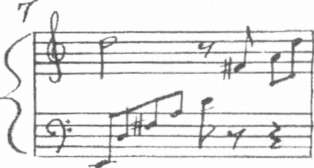
Tapınak
sü suya gömülmüştü, ama üzerinden geçilebiliyordu. Hopital des Maiades Hastanesi'nin bahçelerini diz boyu siyah sel suları kaplamıştı. Nehrin sol yakasında birkaç bina taşkın sularına kapılmıştı.
Kabaran nehrin Paıcherou savağı yakınında ağaçlar köklerinden sö-
külmüş, çamurun içinde ayakta kalmaya çabalıyordu.
Leonie haberleri gitgide artan bir kaygıyla dinliyordu. Mösyö Constant'ın durumu için endişeliydi. Onun başına kötü bir şey geldiğini düşünmesi için bir neden yoktu, ama kapıldığı kaygı bitmek bilmiyordu. Üstelik sel suyu altında kalan semtleri tanıdığını ya da bu konuyla özel olarak ilgilendiğini Anatole'e itiraf edememesi durumunu daha da kötüleştiriyordu.
Leonie, kendini azarladı. Yanında yalnızca bir saat geçirdiği bir insan için böylesine güçlü duygular beslemek son derece saçmaydı. Yine de Mösyö Constant, onun romantik aklında yer almıştı ve düşüncelerini ondan uzaklaştıramıyordu. Ekimin ilk haftalarında pencerenin önünde oturup, Paris'teki annesinden mektup beklerken, şimdi, ayın sonunda Carcassonne'dan gelip Rennes-les-Bains Postanesinde kendisini bekleyen bir mektup olup olmadığını merak ediyordu.
En önemli soru kendi başına kasabaya nasıl gideceğiydi? Böylesine hassas bir işi sevimli Pascal ya da tatlı Marieta'ya bile teslim edemezdi.
Kaygılandıran bir nokta daha vardı: Eğer otel müdürü konser iptal edilme-diği halde mektubu kararlaştırılan saatte Gambetta Meydanı'nda Mösyö Constant'a ulaştıramamışsa, ilkelerine sadık olduğunu hissettiği adam herhalde bu konudan uzak kalmayı onur meselesi yapardı.
Adamın onu nerede bulacağını bilmediğinin farkındaydı. Ayrıca kararlaştırdıkları buluşma yerine gelmediği için hakkında kötü düşünüyor olması fikri de hiç aklından çıkmıyordu.
447
45
O O
Aradığı fırsat üç gün sonra karşısına çıktı.
Çarşamba akşamı Isolde akşam yemeğini Anatole ve Leonie ile birlikte aşağıda yiyecek kadar iyileşmişti. Çok az yemek yedi ya da daha doğrusu birçok yemeğin tadına baktı, ama hiçbirinden hoşlanmadı. Carcassonne'da Leonie'nin aldığı kahve çekirdeklerinden hazırlanmış taze kahve bile hoşuna gitmedi.
Anatole, onun üzerine düştü, iştahını açacak birçok şey önerdi, en sonunda biraz beyaz ekmek, yayık tereyağı ile bal yemeye ikna edebildi.
"İstediğin herhangi bir şey var mı? Ne istersen, ne yapar eder senin için bulurum."
Isolde gülümsedi. "Her şeyin tadı çok garip geliyor."
"Ama yemelisin," dedi Anatole sertçe. "Gücünü kazanmak zorunda-sın ve..."
Cümlesini tamamlamadı. Leonie aralarında geçen bakışı fark etti ve ne söyleyecekken vazgeçtiğini merak etti.
"Yarın Rennes-les-Bains'e gidip istediğin her şeyi alabilirim."
Leonie'nin beyninde bir şimşek çaktı. "Ben gidebilirim," derken sesinin neşeli çıkması için çalışıyordu. "Anatole'ü buradan uzaklaştırmaktan-sa, kasabaya inmek benim için eğlenceli olur." Isolde'e bakarak devam etti.
"Senin zevkini biliyorum yenge. Eğer sabah araba gerekli değilse, Pascal, beni götürebilir. Magasins Bousquet'den bir kutu şekerli zencefil alırım."
Isolde'ün soluk gri gözlerindeki ilgi kıvılcımını görünce memnun oldu.
448
Tapınak
"İşte bunu yiyebileceğimi itiraf ediyorum," dedi genç kadın.
"Ayrıca belki," derken Isolde'ün en sevdiği yiyecekleri aklından geçiriyordu. " Pastaneye uğrayıp bir kutu Jesuites pastası alabilirim. Ne dersin?"
Leonie bol kremalı keklerden nefret ediyordu, ama Isolde'ün ara sıra kendini şımarttığını biliyordu.
"Şu anda benim için ağır gelir," diye gülümsedi Isolde. "Ama karabiberli bisküviler hiç de fena sayılmaz."
Anatole, ona bakarak gülümsedi.
"Pekâlâ, sorun çözüldü." Uzanıp Leonie'nin minik elini avucuna aldı.
"Eğer istersen seve seve seninle gelebilirim, küçüğüm."
"Hiç gerek yok. Benim için bir macera olacak. Eminim burada zamanını dolduracak epey işin vardır."
Anatole, Isolde'e baktı. "Doğru," diye onayladı. "Eğer tek başına gidebileceğinden eminsen Leonie."
"Kesinlikle eminim," dedi Leonie aceleyle. "Saat onda yola çıkarım ve öğle yemeğine kadar dönmüş olurum. Bir liste hazırlarım."
"Bunca sıkıntıya katlandığın için çok teşekkür ederim," dedi Isolde.
"Benim için zevk," diye yanıtlarken gerçeği söylüyordu.
Pascal fark etmeden postaneye uğrayabilirse, Mösyö Constant'ın kendisine yönelik iyi ya da kötü niyeti hakkında bir fikir sahibi olacaktı.
O gece yatağına yatınca Constant'tan gelen bir mektubu elinde tutmanın nasıl bir duygu olacağını düşledi. Böyle bir aşk mektubu neler anlatır, hangi duyguları yansıtırdı...
Uykuya dalıncaya kadar Mösyö Constant'ın hayali mektubundaki zarif sevgi ve saygı sözcüklerine karşı en az yüz tane yanıt hazırladı.
29 Ekim Perşembe sabahı hava harikaydı.
Domaine de la Cade, orada burada beyaz bulutların salındığı uçsuz bucaksız mavi göğün altında yumuşak bakır rengi bir ışığa gömülmüştü.
Üstelik hava ılıktı. Fırtınalı günler geçmiş yaz esintilerinin anılarını bı-
rakmıştı. Güzel bir pastırma yazı.
449
F: 29
Kate Mosse
Saat onu çeyrek geçe Leonie üzerinde bu yolculuk için özenle seçtiği koyu kırmızı elbisesi, ceketi ve şapkasıyla Perou Meydanı'nda arabadan indi. Elinde alışveriş listesiyle Gran'Rue üzerinde dolaşıp teker teker dükkânlara girip çıktı. Magasins Bousquet, Les Freres Marcel Pâtisserie et Chocolaterie, ekmek fırını ve biraz iplik aldığı tuhafiyecinin paketlerini taşımak için Pascal, ona eşlik ediyordu. Maison Gravere'e bitişik, Anatole ile gezerken kahve içtikleri kafeye oturup nar şurubu içerken tanıdık bir ortamda bulunduğunu düşünüyordu.
Sanki Leonie kasabaya ve kasaba ona aitti. Gerçi tanıdığı birkaç kişi ona soğuk davranmış, hanımlar kafalarını çevirmiş, kocaları pek şapkalarını çıkarıp selam vermemişti, ama kendisine hakaret edildiği fikrine kapılmadı. Doğma büyüme Parisli olduğu halde Aude bölgesinin ağaçlarla kaplı dağları ve gölleri arasında kendini daha canlı, daha hayat dolu hissediyordu. Büyük kentte böyle bir duyguya kapılmamıştı.
Yaşadıkları Sekizinci Bölge'nin kirli sokaklarını, dumanını ve özellikle özgürlüğüne getirilen kısıtlamaları düşünmek şimdi onu dehşete düşürüyordu. Eğer Anatole Noel'de gelmesi için annelerini ikna etmeyi başarırsa, yeni yıla ve hatta daha sonrasına kadar Domaine de la Cade'da kalmaktan mutlu olurdu.
İşleri çabucak bitti. Saat on birde, Pascal'a belli etmeden postaneye gitmek dışında yapacağı bir şey kalmamıştı. Paketleri, meydanın güneyinde, su yalağının yanında bekleyen yeğenine emanet ettiği arabaya götürmesini söyledi ve Mösyö Baillard'ı ziyaret etmek istediğini bildirdi.
Pascal'ın yüz ifadesi sertleşti. "Onun Rennes-les-Bains'e döndüğünü bilmiyordum, Matmazel Leonie."
Göz göze geldiler. "Ben de emin değilim, ama oraya kadar yürüyüp geri gelmek zor değil. Perou Meydanı'nda seninle buluşuruz."
Bunları söylerken mektubu kimse görmeden okuma fırsatını yakaladığını da düşündü. "Hatta Pascal," diye ekledi aceleyle. "Beni burada bırakabilirsin. Domaine de la Cade'a yürüyerek dönebilirim. Beklemen gereksiz."
Pascal'ın yüzü kıpkırmızı oldu. "Dönüş yolunu yaya olarak dönmeniz sizi burada bırakmamı Senyör Anatole'ün hoş karşılayacağından emin de-450
Tapınak
ğilim." Yüz ifadesi Carcassonne'da Leonie'nin yanından ayrılmasına göz yumduğu için Marieta'nın azar işittiğini açıkça belirtiyordu.
"Yalnız bırakmaman için ağabeyim kesin bir talimat verdi mi?" diye sordu derhal. "Verdi mi?"
Pascal talimat vermediğini kabul etmek zorunda kaldı.
"İyi öyleyse. Ormandan geçen yolu biliyorum. Bildiğin gibi Marieta bizi Domaine de la Cade'ın arka kapısından getirmişti, onun için yolu biliyorum. Belki de bu yılın en son güneşli gününde ağabeyimin güzel havadan yararlanmamı istemeyeceğini hiç sanmam."
Pascal kıpırdamadı.
"Hepsi bu kadar," dedi Leonie gereğinden daha sert bir sesle.
Pascal bir süre duygusuz bir ifadeyle ona baktı ve birdenbire sırıttı.
"Nasıl arzu ederseniz Matmazel Leonie," dedi sakin sesiyle. "Senyör Anatole'e hesap verecek olan sizsiniz ben değil."
"Beni yalnız bırakman için ısrar ettiğimi söyleyeceğim."
"İzninizle Marieta'ya kapının kilidini açmasını ve yolun yarısına kadar inip sizi karşılamasını söylerim. Belki yolunuzu şaşırırsınız."
Huysuzluğuna karşılık Pascal'ın iyi niyeti ve onun iyiliğini düşünüyor olması Leonie'yi utandırdı. Tüm o cesur tavırlarına karşın, ormandan tek başına geçme fikri onu biraz kaygılandırıyordu.
"Teşekkür ederim Pascal," dedi usulca. "Söz veriyorum, hemen döne-ceğim. Yengem ve ağabeyim farkına bile varmayacak."
Pascal başını salladı ve eli kolu paketlerle dolu arkasını dönüp gitti.
Leonie bir süre ardından baktı.
Tam köşeyi dönerken gözüne bir şey takıldı. Mavi pelerinli bir kişinin sanki görünmek istemiyormuş gibi kiliseye giden dar yola saptığını fark etti. Leonie bir an kaşlarını çattı, ama nehre doğru yürürken bu olayı ak-lından çıkardı.
Pascal'ın izleyebileceğini düşünerek postaneye Mösyö Baillard'ın evinin bulunduğu sokaktan dolaşarak gitmeye karar vermişti.
Isolde'ün birkaç ahbabına selam verdi ama kimseyle sohbet edip zaman yitirmedi. Birkaç dakika içinde istediği yere ulaştı. Küçük evin mavi kepenklerinin açık olduğunu görünce şaşırdı.
451
Kate Mosse
Leonie durdu. Isolde, Mösyö Baillard'ın yakın gelecekte Rennes-les-Bains'e dönmeyeceğini söylemişti. En azından St. Martin Yortusu'na kadar dönmesi beklenmiyordu. Acaba bu arada ev başkasına mı kiralanmıştı?
Yoksa zamanından önce mi dönmüştü?
Nehir kenarına ulaşınca dönüp, postaneye giden Hermite Sokağı'na baktı. Mektubun gelme olasılığının heyecanına kapılmıştı. Günlerdir bundan başka bir şey düşünemiyordu. Ama heyecanlı beklentinin keyfini çıkardıktan sonra umudunun kırılacağından da korkuyordu. Mösyö Constant yanıt vermemiş olabilirdi.
Üstelik haftalardır Mösyö Baillard ile görüşmenin özlemini çekiyordu. Eğer evine uğramadan geçer ve onunla dostluğunu tazeleme fırsatını kaçırdığını daha sonra öğrenirse, asla kendini affetmezdi.
Eğer bir mektup varsa, on dakika daha bekleyebilir.
Leonie bir adım atıp kapıyı tıklattı.
Bir an hiçbir şey olmadı. Başını kapının boyalı yüzeyine yaklaştırdı ve ayak seslerini duydu.
"Tamam," dedi bir çocuk sesi.
Kapı açılırken bir adım geriledi. Davet edilmeden geldiği için ani bir utanca kapılmıştı. Gözleri karadut renginde, koyu renk saçlı küçük bir oğlan ona bakıyordu.
"Mösyö Baillard evde mi? Benim adım Leonie Vernier. Madam Lascombe'un yeğeniyim. Domaine de la Cade'da oturuyor."
"Sizi bekliyor muydu?"
"Hayır. Buradan geçiyordum ve bir uğrayayım dedim. Eğer müsait değilse..."
"Kim o?"
Oğlan arkasını döndü. Mösyö Baillard'ın sesini duyan Leonie gülümsedi. Cesaretini toplayıp seslendi.
"Benim, Leonie Vernier, Mösyö Baillard."
Beyaz takım elbisesiyle adam koridorda göründü. Leonie onu davet gecesinden anımsıyordu. Giriş holünün loş ışığında bile gülümsediğini fark etmişti.
"Matmazel Leonie," dedi yaşlı adam. "Bu ne sürpriz."
452
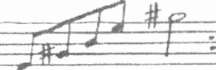
Tapınak
"Yengem rahatsız olduğundan, onun adına bazı işleri hallettim ve Pascal eve döndü. Rennes-les-Bains'den ayrıldığınızı duymuştum, ama kepenkleri açık görünce, ben..."
Gevezelik ettiğinin farkına varıp sustu.
"Uğradığınıza sevindim. Lütfen içeri girin."
Leonie kararsız kaldı. Gerçi tanınmış bir insandı, Isolde yengenin ahbabıydı, Domaine de la Cade'a konuk olarak geliyordu, ama yalnız ya-
şayan bir beyefendinin evine genç bir kızın tek başına girmesinin yakışık almayacağını aklından geçirdi.
Ama kim görecek ki?
"Teşekkür ederim," dedi Leonie. "Çok sevinirim."
Eşikten içeri girdi.
453
71
o o
Koridoru geçip Mösyö Baillard'ı izleyerek evin arka tarafındaki kü-
çük odaya girdi. Duvarın biri tek parça büyük bir camdan yapılmıştı.
"Oh, bu manzara bir tablo kadar güzel."
"Öyledir. Ben çok şanslıyım."
Geniş taş şöminenin yanındaki yüksek arkalıklı koltuğa yakın duran sehpadaki küçük gümüş çanı çaldı. Aynı oğlan içeri girdi. Leonie belli etmeden gözlerini odada dolaştırdı. Birbirine benzemeyen iskemleler, kanepenin arkasında küçük bir masayla basit döşenmiş bir odaydı. Şö-
minenin karşı duvarını kaplayan kütüphanenin tüm rafları tıklım tıklım doluydu.
"İşte buyrun," dedi adam. "Lütfen oturun. Bana haberlerinizi aktarın Matmazel Leonie. Domaine de la Cade'da her şeyin yolunda olduğunu umarım. Yengenizin rahatsız olduğunu söylediniz. Ciddi bir şey değildir umarım."
Leonie şapkasıyla eldivenlerini çıkarıp, adamın karşısındaki koltuğa yerleşti.
"Oldukça düzeldi. Geçen hafta fırtınaya yakalandık ve yengem soğuk aldı. Doktor çağırdık, şimdi daha iyi ve her geçen gün daha iyi olacak."
"Durumu biraz kritik," dedi adam. "Üstelik henüz ilk günler, ama her şey yoluna girer."
Anlamsız sözler karşısında şaşırarak ona baktı Leonie ve aynı anda küçük oğlan, üzerinde iki süslü cam kadeh ve gümüş sürahi olan bir pirinç 454
Tapınak
tepsiyle içeri girdi. Üzerinde dönen baklava biçimi desenler olan sürahi, kahve demliğine benziyordu. Leonie aklından geçen soruyu soramadı.
"Kutsal topraklardan geliyor," dedi ev sahibi. "Yıllar önce ölen eski bir dostumun armağanı."
Küçük uşak koyu kırmızı sıvıyla dolu bir kadeh uzattı.
"Nedir bu Mösyö Baillard?"
"Guignolet denilen yerel bir kiraz likörü. Benim hoşuma gidiyor.
Özellikle şu karabiberli bisküvilerle iyi gidiyor." Başını sallayınca oğlan tabağı Leonie'ye uzattı. "Bu yörenin özel bir bisküvisidir, her yerde bulunur, ama bence Freres Marcel'in dükkânında yapılanlar en iyisidir."
"Ben de biraz aldım," dedi Leonie. Bir yudum guignolet içti ve hemen öksürmeye başladı. Çok tatlı, keskin yabanıl kiraz kokulu, ama çok sert bir likördü.
"Tahmin ettiğimizden daha erken döndünüz," dedi Leonie. "Yengem, bana sizin ancak kasım sonunda belki de Noel'de döneceğinizi söylemişti."
"İşlerim sandığımdan daha çabuk bitti; onun için erken döndüm.
Kasabada söylentiler dolaşıyordu. Burada daha fazla işe yarayacağımı düşündüm."
İşe yaramak? Leonie bunun garip bir sözcük olduğunu düşündü, ama üzerinde durmadı.
"Nereye gitmiştiniz mösyö?"
"Bazı eski dostlarımı ziyaret ettim," dedi Baillard sakin bir sesle.
"Ayrıca dağlarda bir evim var. Montsegur Kalesi'nden pek uzak olmayan Los Seres adlı minik köyde. Tamir isteyip istemediğini gidip bir kontrol ettim."
Leonie kaşlarını çattı. "Öyle mi? Kışı dağlarda geçirmek yerine kasabada bir ev tuttuğunuz izlenimine kapılmıştım."
Adamın gözleri parladı. "Dağlarda epey kış geçirdim matmazel. Ba-zıları çok sert, bazıları daha yumuşaktı." Düşüncelere dalmış gibi bir an sustu." Son haftalarda siz ne yaptınız? Son karşılaşmamızdan bu yana yeni maceralar yaşadınız mı?"
Leonie, adamın bakışlarına karşılık verdi. "Eğer bunu soruyorsanız, tapınağa tekrar gitmedim Mösyö Baillard."
455
Kate Mosse
Adam gülümsedi. "Evet, bunu demek istemiştim."
"Yine de tarot kartlarının hâlâ ilgimi çektiğini itiraf ediyorum," derken adamın yüz ifadesini inceledi, ama yılların yorgunluğunu taşıyan yüzü hiçbir duygusunu yansıtmıyordu. "Ayrıca bir dizi tablo yapmaya başladım."
Bir an duraklayıp devam etti. "Duvarlardaki imgelerin kopyaları."
"Öyle mi?"
"Sanırım ön çalışma diyebiliriz. Hayır, aslında kopya demeliyiz."
Baillard öne eğildi. "Hepsini siz mi yaptınız?"
"Şey, hayır," diye yanıtladı, kapalı bir ifade olduğunu düşünerek."Yalnızca baştakileri. Büyük Arkana adını verdikleri tarot kartlarını ve çoğunu ben yapmadım. Bazı imgeleri denemeye pek hevesli olmadığımı fark ettim.
Örneğin Şeytan."
"Ve KuleT
Leonie'nin yeşil gözleri kısıldı. "Doğru. Kule'y'ı de yapmadım. Neden..."
"Bu resimleri ne zaman yapmaya başladınız matmazel?"
"Yemek davetinin olduğu gün. Öğleden sonram boştu ve vaktimi değerlendirmek istedim. Bilinçli bir hareket olmamasına rağmen kendimi kaptırdığımı fark ettim ve devam etmeye karar verdim."
"Siz hangisi olduğunu sorabilir miyim?"
"Güç." Leonie bir an duraksadı ve resme baktığı anda benliğini kaplayan duyguları anımsayarak titredi. "Yüz, benim yüzümdü. Niçin böyle oldu dersiniz?"
"Güç kartının özelliklerini kendinizde gördüğünüzü söylemek en kolay açıklama olacaktır."
Leonie daha fazlasını söylemesini bekledi ama Mösyö Baillard'ın bu konuda daha fazla konuşmayacağını algıladı.
"Amcamın ve Les Tarots adlı kitabında yazdığı deneyimlerinin gitgide daha fazla ilgimi çektiğini itiraf etmeliyim," diye devam etti. "Size baskı yapmak istemiyorum Mösyö Baillard, ama acaba kitabında anlattığı olayları yaşadığı zaman amcamı tanıyor muydunuz?" Bu sorudan hoşlanıp hoşlanmadığını anlamak için adamın yüzünü inceledi, ama Mösyö Baillard'ın ifadesinden bir şey anlaşılmıyordu. "Olayın annemin Domaine de 456
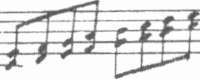
Tapınak
la Cade'dan ayrılmasından sonra ya da amcamla yengemin evlenmesinden önceki yıllara denk geldiğini düşünüyorum." Duraksayarak devam etti.
"Saygısızlık etmek istemiyorum, ama sanırım amcanı yalnızlığı seven bir erkekmiş. Başkalarıyla pek dostluk kurmazmış değil mi?"
Mösyö Baillard'a yanıtlama fırsatı vermek için Leonie bir kez daha susup bekledi. Ne var ki, yaşlı adam damarları çıkmış elleri kucağında, dinlemekten mutluymuş gibi sessizce oturuyordu.
"Isolde yengemin söylediklerine dayanarak," diye devam etti Leonie,
"Abbe Sauinere, Rennes-le-Château'ya bölge rahibi olarak gelince, amcamı onunla tanıştırdığınız izlenimine kapıldım. Tıpkı sizin gibi yengem de ta-pınakta olup biten ve bir rahibin işe el koymasını gerektiren şeylerle ilgili bazı söylentilerin dolaştığını ima etti."
"Ah!" Audric Baillard parmak uçlarını birbirine bastırdı.
Leonie derin bir soluk aldı. "Ben... Abbe Sauniere, amcam adına bir şeytan çıkarma işlemi mi gerçekleştirdi? Olay bu mu? Böyle bir şey... tapı-
nağın içinde mi oldu?"
Bu soruyu sorduktan sonra Leonie sakince bekledi. Sessizliğin ikna gücünü kullandı. Neredeyse sonsuz gibi gelen bir süre odadaki tek ses saatin tik taklarıydı. Koridorun ötesinden tabak çanak gürültüleri ve ahşap
/.emin üzerinde dolaşan süpürgenin sesi kulağına geldi.
"Mekânı kötülükten arındırmak için," dedi sonunda. "Böyle mi oldu?
Bir ya da iki kez ben de sanki görüverdim, ama annemin onun varlığını çocukken hissetmiş olacağını şimdi algılıyorum. Çünkü erken bir tarihte Domaine'den ayrılmış."
W*
457
72
O O
"Bazı tarot destelerinde şeytanı temsil eden kart, Hz. Süleyman'ın yanlış ibadet etmekle suçlandığı Yoksul Tapınak Şövalyeleri'nin idolü olan Baphomet'in kafası resmedilmişti," dedi Baillard en sonunda.
Leonie başını salladı, ama neden böyle bir açıklama yaptığını anlamadı.
"Buradan pek uzakta olmayan Bezu'daki tapınağın bir papaz evi ol-duğu söylenirdi," diye devam etti yaşlı adam. "Elbette böyle bir şey yoktu.
Tarihi kayıtlar açısından kolektif bellekte Albigenler ile Yoksul Şövalyeler birbirine karıştırılır. Gerçi her ikisi de aynı dönemde yaşamışlar, ama aralarında bağlantı yoktu. Zamanlama rastlantısı örtüşme sayılmaz."
"Bunların Domaine de la Cade ile bağlantısı nedir Mösyö Baillard?"
Yaşlı adam gülümsedi. "Tapınağı ziyaret ettiğinizde Asmodeus heykelini gördünüz değil mi? Hani omzunda okunmuş bir su kabı taşıyan heykel?"
"Gördüm."
"Ashmadia ya da Asmodai diye bilinen Asmodeus adı, büyük bir olasılıkla Farsçada gazap iblisi anlamına gelen aeshmadaeva sözcüğünden türetilmiştir. Asmodeus sonradan kutsal kabul edilen Tobit Kitabı'nda olduğu gibi Eski Ahit'in sahte biri kopyası sayılan Hz. Süleyman'ın Vasi-yetimde. de yer alır. Bu kitabın Süleyman tarafından hazırlanıp yazıldığı söylenir, ama tarihi gerçekler açısından böyle olmadığı bilinir."
458
Tapınak
Eski Ahit hakkında çok az bilgisi olmasına karşın Leonie başını salladı. Ne Anatole ne de kendisi kilise okuluna gitmişti. Anneleri dinsel batıl inançların çağdaş hassasiyetle bağdaşmadığını söylerdi. Cemiyet ya-
şamında ve davranışlarında geleneksel olmasına karşın Marguerite ateşli bir kilise karşıtıydı. Leonie birdenbire annesinin bu duygularının çocukluk yıllarını geçirdiği Domaine de la Cade ile bir bağlantısı olup olmadığını merak etti ve ilk fırsatta ona sormaya karar verdi.
Mösyö Baillard'ın sakin sesi, genç kızı daldığı düşüncelerden uzaklaştırdı.
"Kral Süleyman'ın Büyük Tapınak'ın inşaatına yardımcı olması için Asmodeus'u çağırmasının öyküsü anlatılır. Özellikle şehvetle ilişkilendiri-len bir iblis olan Asmodeus gelir, ama varlığı rahatsız edicidir. Süleyman'ın krallığının günün birinde parçalanacağını söyler."
Baillard ayağa kalkıp, bir raftan kahverengi deri ciltli küçük bir kitap aldı. Aradığı paragrafı buluncaya kadar incecik sayfaları narin parmaklarıyla çevirdi.
"Şöyle diyor: 'Benim takımyıldızım ininde yatan bir hayvan gibidir, diye konuştu iblis. Yani bana çok şey sorma Süleyman çünkü zamanla senin krallığın bölünecek. Senin bu görkemin geçicidir. Bir süre işkence yapmamız için bize sahipsin, ama sonra insanların arasına dağılacağız ve insanlar bize hükmeden meleklerin adını bilmediklerinden bizi tanrı yerine koyacaklar.' Süleyman'ın Vasiyet' i, bölüm beş, dize dört ve beş,"
diyerek kitabı kapattı Baillard.
Bir an nasıl tepki vermesi gerektiğini bilemeyen Leonie sesini çıkarmadı.
"Daha önce de söylediğim gibi Asmodeus cinsel arzularla ilişkilendi-rilen bir iblistir," diye devam etti Baillard. "Özellikle yeni evlilere düşmandır. Sahte Tobit Kitabı'nda anlatılanlara göre Sarah adlı kadına işkence yapar ve evliliklerinin hiçbirine izin vermez, her seferinde kocalarını öldü-
rür. Sekizinci seferde melek Raphael, Sarah'ın son koca adayına bir balığın kalbini ve karaciğerini kor halindeki kömürlerin üzerine koymasını söyler.
Kötü koku, Asmodeus'u uzaklaştırır ve Mısır'a kaçmasına neden olur. Burada Raphael onu bağlar ve etkisiz hale getirir."
459
Kate Mosse
Leonie bu sözleri duyunca tapınakta duyumsadığı iğrenç kokuyu anımsayarak titredi. Anlaşılmaz bir rutubet, duman ve deniz kokusu al-mıştı.
"Bu öyküler çok eski gibi geliyor değil mi?" dedi ev sahibi. "Aslında amaç büyük gerçeği ortaya çıkarmak, ama çoğunlukla bu öyküler o gerçeği gizliyor." İnce, uzun parmaklarıyla deri ciltli kitaba vurdu. "Süleyman'ın Vasiyet' inde ayrıca Asmodeus'un suyun yanında bulunmaktan nefret ettiği söyleniyor."
Leonie oturduğu yerde doğruldu. "Acaba bu nedenle mi, omzunun üzerine kutsal su kâsesi yerleştirildi? Olabilir mi Mösyö Baillard?"
"Olabilir. Asmodeus başka dinsel içerikli yapıtlarında da karşımıza çıkıyor. Örneğin Tobit'teki Asmodeus'tan daha az kötü bir karakter olarak Talmud'da Asmodai ile benzeşiyor. Onun arzulan Süleyman'ın eşleri ve Bat-şeba üzerinde odaklanıyor. Daha sonra, on beşinci yüzyılın ortasın-da Asmodai şehvet iblisi olarak, bence iblislerin ve onların kötü işlerinin oldukça basit bir kataloğu olan Malleus Maleficarum adlı kitapta ortaya çıkıyor. Bir koleksiyoncu olarak belki ağabeyiniz bu kitabı biliyordur."
Leonie omzunu silkti. "Belki."
"Yılın farklı dönemlerinde iblislerin güçlerinin en güçlü duruma geldiğine inananlar vardır."
"Öyleyse Asmodeus ne zaman en güçlü konuma geliyor?"
"Kasım ayında."
"Kasım," diye yineledi Leonie. Bir an düşündü. "Pekâlâ Mösyö Baillard batıl inançlarla varsayımların, kartların, tapınağın, sudan korkan ve evlilikten nefret eden iblisin arasındaki bağlantı nedir?"
Baillard kitabı yerine bıraktı, pencereye yaklaşıp ellerini pervaza dayadı, arkası ona dönük olarak durdu.
"Mösyö Baillard?" diye dürttü Leonie.
Yaşlı adam arkasını döndü. Büyük pencereden içeri dolan bakır rengi güneş ışığı bir an için adamın çevresinde bir hale yarattı. Leonie eski bir tabloda görebileceği bir Eski Ahit peygamberinin resmine bakıyormuş
duygusuna kapıldı.
Adam odanın ortasına doğru yürüyünce, görüntü yok oldu.
460
Tapınak
"Matmazel, köyün batıl inançları her şey çığırından çıktığında, vadilerde ve ağaçlı yamaçlarda bir iblisin dolaştığından söz ettiği zaman, bunları uydurma öyküler olarak kulak ardı etmemeliyiz. Domaine de la Cade'ın da aralarında bulunduğu bazı yerlerde çok eski güçler hâlâ işba-
şında." Devam etti. "Ya da bazıları ruhlarla iletişim kurmak için böyle bir yaratığı canlandırdıkları zaman, kötülüğün denetim altına alınamayaca-
ğını bilmezler."
Leonie buna inanmıyordu, ama aynı zamanda kalp atışları hızlandı.
"Amcam bunu mu yaptı Mösyö Baillard? Amcamın kartlar ve tapı-
nağın ruhu aracılığıyla şeytan Asmodeus'u canlandırdığına inanmamı mı istiyorsunuz? Onu denetim altında tutamadığını fark ettiğini mi? Bunca yaratık öyküsünün aslında gerçek olduğunu mu? Yani amcamın vadideki ölümlerden bir nevi sorumlu olduğunu mu? Bunları bildiğini mi?"
Audric Baillard gözlerinin içine baktı. "Biliyordu."
"Demek bu nedenle Abbe Sauniere'nin yardımını istemek zorunda kaldı?" diye devam etti Leonie. "Ortaya çıkardığı canavarı yok etmek için.
Isolde yenge bunu biliyor muydu?"
"Onun buraya gelişinden önce oldu. Bilmiyordu."
Leonie yerinden kalkıp pencereye yaklaştı. "Buna inanmıyorum," de-di aniden. "Böyle öyküler... iblisler, şeytanlar... Böyle öykülere çağdaş dünyada yer yoktur." İşin acı yönünü düşünürken sesi alçaldı. "Şu çocuklar,"
diye fısıldadı. Yürüdükçe tahta zemin çatırdıyordu. "Buna inanmıyorum,"
diye tekrarladı, ama sesindeki kesinlik kaybolmuştu.
"Kan kanı çeker," dedi Baillard alçak sesle. "Bazı şeyler de kötülüğü kendine çeker. Bir mekân, bir nesne, bir kişi kendi kötü amaçlarının gü-
cüyle kötü koşulları, kötülükleri, günahları kendine doğru çeker."
Leonie durdu; düşünceleri bin bir farklı yöne dağılmıştı. Nazik ev sahibine baktı ve tekrar yerine oturdu.
"Bunları kabul etsem bile, kartlar için ne diyeceksiniz Mösyö Baillard? Eğer yanlış anlamadımsa, kullanıldıkları koşullara dayalı olarak kartlar iyilik ya da kötülüğün gücü olabilir diyorsunuz."
"Doğru. Bir kılıcın iyilik ya da kötülük için kullanıldığını düşünün.
Bunu sağlayan çeliğin kendisi değil, onu sallayan eldir."
461
Kate Mosse
Leonie başını salladı. "Kartların kaynağı nedir? Onları kim boyadı ve hangi amaçla? Amcamın yazdıklarını ilk kez okuduğumda tapınağın duvarındaki resimlerin her nasılsa yerlerinden kalkıp kartların üzerine yerleştiklerini düşündüm."
Audric Baillard gülümsedi. "Eğer böyle olsaydı Matmazel Leonie tam bir deste değil yalnızca sekiz kart olurdu."
Leonie hayal kırıklığına uğradı. "Evet sanırım haklısınız. Aklıma gelmemişti."
"Ama yine de sözlerinizde bir gerçek payı yok değil."
"Öyleyse Mösyö Baillard söyleyin bana, niçin özellikle bu sekiz tablo seçilmiş?" Yeşil gözleri aklına yeni gelen bir fikirle parladı. "Duvarda kalan imgeler amcamın kendine çektikleri olabilir mi? Başka koşullar altında, dünyalar arasında böyle bir iletişim kurulurken başka kartların imgeleri duvardaki tablolar biçimine gelir mi?"
Audric Baillard dudaklarında uçuk bir gülüşün dolaşmasına izin verdi.
"Daha az değerli kartlar ya da oyun kâğıtları diyelim, inançları nedeniyle katliam yapan, baskı yapan, aykırı görüşlerin kökünü kazımak isteyen, dünyayı kana bulayan insanların yaşadığı mutsuz dönemlere aittir."
"Yani Albigenler mi?" dedi Leonie, Lanquedoc'un on üçüncü yüzyıldaki trajik tarihi hakkında Isolde ile Anatole'ün konuştuklarını anımsayarak."
Yaşlı adam başını salladı. "Keşke tarihten daha çabuk ders alınsaydı matmazel, ama korkarım ki değil."
Sesinin ciddiyetinde, sözlerinin ardında yüzyılları kapsayan bir bilgeliğin yattığını algılıyordu Leonie. Şimdiye dek geçmiş olaylara hiç ilgi duymadığı halde, artık bir olayın bir başkasına nasıl yol açtığını öğrenmek istiyordu.
"Albigenler'den değil, daha sonraki din savaşlarından, on altıncı yüzyıl-da Katolik Guise Hanedanlığı ile daha kolay anlaşılması için Bourbon'lu Huguenot Hanedanlığı arasındaki çatışmalardan söz ediyorum." Bir an ellerini havaya kaldırıp indirdi. "Her zaman olduğu gibi, inancın gereksinimleri toprakların ve hükmedenlerin gereksinimlerine ayrılmaz bir biçimde bağlanır."
462
Tapınak
"Kartlar bu dönemden mi kalma?" diye ısrar etti Leonie.
"Elli altı kartın orijinali uzun kış gecelerini geçirmek için İtalyanların tarrochi oyunundan esinlenerek hazırlanmış. Sözünü ettiğim dönemden yüz yıl kadar önce İtalyan Sarayı ve soyluları böyle eğlenceleri ortaya çı-
karmış. Cumhuriyet kurulunca da saray kartlarının yerini gördüğünüz gibi Maître, Maîtresse, Fils ve Fille almış."
"Kılıçların kızı," dedi Leonie tapınağın duvarındaki resmi anımsayarak. "Ne zaman?"
"Açıkça bilinmiyor. Aslında Devrim'in hemen öncesinde, eğlenceli tarot oyunu Fransa'da bambaşka bir şekil almış. Bir geleceği görme sistemi, görünen ve bilinen ile görünmeyen ve bilinmeyen arasında bağlantı kurma yöntemi olmuş."
"Yani kart destesi daha önceden Domaine de la Cade'da bulunuyordu, öyle mi?"
"Elli altı kart o evde yaşayanların değil, evin malıdır. Mekânın es-ki ruhu deste üzerinde çalıştı; efsaneler ve söylentiler kartlara daha fazla anlam ve amaç kattı. Gördüğünüz gibi kartlar sırayı tamamlayacak birini bekliyordu."
"Amcamı."
Baillard başıyla onayladı. "Lascombe, Paris'teki iskambil kâğıdı falcılarının yayımladığı, Antoine Court de Gebelin'in eski ve Eliphas Levi ile Romain Merlin'in çağdaş yazılarını okudu ve baştan çıktı. Kendisine miras kalan kart destesine Büyük Arkana'nın, hayatın temel dönüşlerinde ve ötesinde nelerin yattığından söz eden yirmi iki kartını ekledi. Kendisine çağırmak istediklerini tapınağın duvarına astı."
"Yirmi iki kartı müteveffa amcam mı boyadı?"
"Evet, o boyadı," dedi ve duraklayıp devem etti. "Matmazel Leonie, özel bir mekânda, koşullar böyle bir şeye izin verdiği zaman tarot kartları aracılığıyla iblislerin, hayaletlerin çağrılabileceğine kesin olarak inanıyor musunuz?"
"Her şey çok açık, Mösyö Baillard ama yine de inandığımı belirt-meliyim." Durup düşündü. "Ama kartların ruhları nasıl kontrol ettiğini anlayamadım."
463
Kate Mosse
"Hayır," dedi Baillard. "Amcanız da bu hatayı yaptı. Kartlar ruhları çağırabilir, ama asla kontrol edemez. Tüm olasılıklar, karakterler, insani arzular, iyilik ve kötülük, bizim uzun ve birbiriyle örtüşen öykülerimiz, imgelerin içindedir, ama ortaya çıktıkları zaman kendi başlarına hareket ederler."
Leonie kaşlarını çattı. "Anlamıyorum."
"Duvardaki tablolar o mekânda en son çağrılan kartların imgeleridir.
Ama biri, bir fırça darbesiyle herhangi bir imgenin yüz hatlarını değiştirirse, tablolar farklı özellikler kazanır. Kartlar farklı öyküler anlatır."
"Söyledikleriniz her yerdeki kartlar için geçerli mi?" diye sordu Leonie. "Yoksa yalnızca Domaine de la Cade ve oradaki tapınak için mi geçerli?"
"Orası, mekânın ruhunun, imgelerin ve seslerin özgün bir bileşimidir matmazel. Aynı zamanda bu mekân, kartların üzerinde oynar. Örneğin şu anda Güç kendini özellikle sizinle ilişkilendiriyor. Sizin sanatçılığınızın aracılığıyla."
Leonie dikkatle ona baktı. "Ama ben kartları görmedim. Aslında ben kartların resimlerini yapmadım; yalnızca duvarda gördüklerimi sıradan resim kâğıtlarına çizdim."
Adam ağır ağır gülümsedi. "Her şey göründüğü gibi değildir, matmazel. Üstelik çizerken kendinizden fazla şeyler çizdiniz. Ağabeyinizi ve yengenizi de bu tablolara kattınız, değil mi?"
Leonie kızardı. "Bu resimler yalnızca burada geçirdiğimiz günlerin anısı için hazırlandı."
"Belki," diyerek başını yana eğdi. "Böyle resimler aracılığıyla sizin öyküleriniz, sizin anlatabileceğinizden çok daha uzun süre yaşayacaktır."
"Beni korkutuyorsunuz mösyö," dedi Leonie sertçe.
"Niyetim bu değildi."
Tarot kartlarını duyduğundan bu yana dilinin ucunda olan soruyu sormadan önce Leonie bir süre durakladı. "Bu deste hâlâ var mı?"
Yaşlı adam bilge gözlerini ona dikti. "Deste duruyor," dedi sonunda.
"Evin içinde mi?" diye sordu hemen.
464
Tapınak
"Abbe Sauniere başka birinin eline geçip baştan çıkmasını önlemek için amcanıza kartları yok etmesi, yakması için yalvardı. Tapınağı da."
Baillard başını salladı. "Ama Lascombe bir düşünür idi. Nasıl Abbe kendi tanrısını inkâr edemezse, o da böylesine eskilere dayanan bir nesneyi yok edemezdi."
"Öyleyse kartlar arazinin bir yerinde mi saklı? Tapınakta olmadığından eminim."
"Güvenli bir yerde. Nehir yatağının kuruduğu, krallarının gömülü olduğu yerde."
"Eğer öyleyse, o zaman..."
Audric Baillard parmağını dudaklarına götürdü. "Bunları sizin meraklı doğanızı sakinleştirmek için anlattım Matmazel Leonie körüklemek için değil. Bu öyküye nasıl ilgi duyduğunuzu, ailenizi ve onları şekillendi-ren olayları daha iyi anlamak istediğinizi biliyorum. Ama uyarımı tekrar ediyorum: Özellikle konuların böylesine hassas bir dengede durduğu bu zamanlarda kartları aramak hiç iyi sonuçlanmayacaktır."
"Bu zamanlar derken ne demek istiyorsunuz Mösyö Baillard? Kasım ayı yaklaşıyor diye mi yoksa?"
Ne var ki, yüz ifadesi bu konuda daha fazla konuşmayacağını belirtiyordu. Leonie usulca ayağıyla tempo tuttu. Sormak istediği birçok soru vardı. Derin bir soluk aldı, ama daha ağzını açmadan Baillard konuşmaya başladı.
"Bu kadarı yeterlidir."
Açık pencereden Saint-Celse ve Saint-Nazaire kiliselerinin çan sesi duyuldu. Gitgide zayıflayan tek bir nota sabahın bittiğine işaret ediyordu.
Çan sesi Leonie'yi şimdiki zamana getirdi. Yapacağı işi unutmuştu.
Aceleyle ayağa fırladı.
"Beni bağışlayın Mösyö Baillard, sizi fazla meşgul ettim." Eldivenlerini giydi. "Bu arada yapmam gereken işlerimi unuttum. Eğer acele edersem... belki postane kapanmadan yetişebilirim..."
Şapkasını bir eliyle kavrayıp, kapıya doğru koştu. Audric Baillard zarif ve sonsuz bir figür olarak ağır ağır ayağa kalktı.
465
F: 30
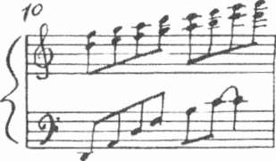
Kate Mosse
"Eğer izin verirseniz mösyö, sizi tekrar ziyaret edebilir miyim? Gö-
rüşmek üzere."
"Elbette matmazel, çok mutlu olurum."
Leonie el sallayarak kapıyı açtı, hızla koridoru geçti ve ön kapıdan so-kağa fırlarken Audric Baillard sessiz odada derin düşüncelere daldı. Küçük oğlan gölgelerin arasından çıkıp genç kızın arkasından kapıyı kapattı.
Baillard tekrar yerine oturdu.
"Si es atal es atal,'v> diye mırıldandı eski dilde. "Ama konu bu kız olunca, keşke böyle olmasaydı diyorum."
(*) Olması gerekenler olacaktır.
466
72
O O
Leonie eldivenlerinin düğmelerini iliklemeye çalışarak, Hermite Sokağı'nda koşuyordu. Sağa dönünce postane karşısına çıktı.
Çift kanatlı ahşap kapı kapalı ve kilitliydi. Yumruğuyla kapıya vurup seslendi.
"Lütfen!" Saat on ikiyi üç dakika geçiyordu. Muhakkak içeride birileri vardı. "Kimse var mı? Gerçekten çok önemli!"
Yaşam belirtisi yoktu. Tekrar vurdu ve seslendi, ama kimse yanıtlamadı. Karşı taraftaki pencerede incecik iki gri saç örgüsü sarkan sinirli bir kadın belirdi ve gürültü yapmaması için ona bağırdı.
Leonie özür dilerken böyle davranarak dikkatleri üzerine çektiği için aptallık ettiğini fark etti. Eğer Mösyö Constant'tan gelmiş bir mektup varsa bile, uzun bir süre daha orada duracaktı. Postanenin öğleden sonra açılmasını bekleyecek kadar uzun bir süre Rennes-les-Bains'de kalamazdı.
Bir kez daha gelmesi gerekiyordu
Duygulan karmakarışıktı. Özellikle yapmak istediği işi beceremediği için kendine kızıyordu, ama aynı zamanda kendisine bir ceza verildiğini de hissediyordu.
En azından Mösyö Constant'ın kötü bir şey yazıp yazmadığını bilmiyorum.
Karmakarışık mantığı garip bir biçimde onu sevindirdi.
Leonie nehre doğru indi. Sol tarafta kaplıca müşterileri bains forts' un demir zengini buharı tüten suyunda oturuyorlardı. Arkalarında beyaz ürıi-467
Kate Mosse
formaları, geniş kenarlarıyla kafalarının üzerine oturmuş deniz kuşlarını andıran şapkalarıyla hemşireler, hastaların sudan çıkmasını bekliyorlardı.
Nehrin öte yanına geçip Marieta'nın onları götürdüğü patikayı buldu.
Ormanın yapısı değişmişti. Sonbaharın yaklaşması ya da şiddetli fırtına nedeniyle bazı ağaçların yaprakları dökülmüştü. Leonie'nin ayaklarının altındaki toprak altın, şarap kırmızısı ve bakır yapraklarla örtülmüştü. Bir an durup üzerinde çalıştığı suluboya resimleri düşündü. Joker imgesi aklı-
na geldi ve belki de fon rengini ormanın sonbahar rengine benzetmesinin daha güzel olacağını düşündü.
Yamacı tırmanırken daha yukarıdaki yaprak dökmeyen ağaçların yeşil örtüsü onu sarmaladı. İncecik dal parçaları, yapraklar, yerlerinden oynamış taşlar ayaklarının altında hışırdıyordu. Dökülmüş çam kozalakları ve atkestanesi ağaçlarının parlak kahverengi meyveleri yeri örtmüştü.
Bir an evini özlediğini hissetti. Annesinin her ekim ayında ağabeyi birlikte onları atkestanesi toplamak için Monceau Parkı'na götürdüğünü anımsadı.
Çocukluğunun sonbaharlarının duygularını ve dokularını hatırlayarak parmaklarını birbirine sürttü.
Rennes-les-Bains gözden kayboldu. Kasabanın hâlâ gürültüsünü duyabileceği mesafede olduğunu düşünüp adımlarını sıklaştırırken aynı zamanda uygarlıktan uzaklaşmakta olduğunu da hissediyordu. Bir kuş
kanatlarını hızla çarparak havalanınca ürktü. Minik bir yaban güvercini olduğunu fark edince sinirlice güldü. Uzaktan av tüfeklerinin sesi kula-
ğına geldi ve bir tanesini Charles Denarnaud'nun ateşleyip ateşlemediğini merak etti.
Leonie hızlandı ve kısa sürede araziye ulaştı. Domaine de la Cade'ın arka kapısını görünce, derin bir soluk aldı. Aceleyle ilerlerken her an hizmetçinin anahtarla ortaya çıkmasını bekliyordu.
"Marieta?"
Yalnızca kendi sesi yankılandı. Sessizliğin içinde kimsenin orada bulunmadığını anladı. Kaşlarını çattı. Pascal'ın söylediğini yapmaması ola-
ğandışıydı. Gerçi Marieta her şeyi çabuk unutuyordu ama yine de güvenilir biriydi.
Ya da belki geldi ve beklemekten sıkıldı.
468
Tapmak
Leonie kapıyı sarsınca kilitli olduğunu anladı. Önce sinirlendi, sonra hayal kırıklığı içinde ne yapması gerektiğini düşündü.
Arazinin tümünü dışarıdan dolaşıp ön kapıya kadar yürümek istemiyordu. Sabahki koşuşturmalar ve yokuş yukarı yürümek onu oldukça yormuştu.
içeri girmenin başka bir yolu olmalı.
Isolde'ün evin dışında çalışan çok az kişiyle böylesine büyük bir araziyi bakımlı tutabileceğine zaten inanmıyordu. Leonie narin biriydi ve dikkatle bakarsa arasından geçebileceği bir boşluk bulacağına inanıyordu.
Ondan sonra da evin yolunu bulmak kolaydı.
Sağa sola bakınarak ne tarafa gitmesi gerektiğini karar vermeye çalıştı ve daha bakımsız olan bölgelerin evden uzak köşeler olduğunu düşünerek doğuya döndü. Eğer bunu başaramazsa en kötüsü araziyi çepeçevre yürü-
yüp ön kapıya ulaşabilirdi.
Hızlı adımlarla yürürken çitlerin arasına bakıyor, yabangüllerini çekiştiriyor, kara böğürtlen çalılarının kötü düğümlerinden kaçınmaya çalışıyor, dövme demir parmaklıkların arasından geçebileceği bir yer arıyordu. Domaine de la Cade'a ilk geldikleri gün kapının yakınındaki kısımların sağlam olduğu dikkatini çekmişti. Kapıdan uzaklaştıkça, ihmal ve bakımsızlık belirtileri artıyordu.
Ancak beş dakika kadar aradıktan sonra bir boşluk keşfetti. Şapkasını çıkardı, eğildi ve derin bir soluk alıp daracık delikten geçince rahatladı.
İçeri girince ceketindeki dikenleri ve yaprakları silkeledi, eteğindeki çamuru temizledi ve eve yaklaştığı için yeni bir enerjiyle yürümeye başladı.
Arazi oldukça dikti, ağaçların oluşturduğu örtü karanlık ve bunaltı-
cıydı. Kayın korusunun uzak tarafında olduğunu ve eğer dikkat etmezse kendini tapınağın önünde bulacağını fark etti. Kaşları çatıldı. Başka bir yol yok mu?
İzlenecek belirgin bir yol yerine daracık patikalar birbirini kesiyordu.
Tüm açıklıklar ve korular birbirine benziyordu. Yönünü saptamak için ağaçların oluşturduğu gölgeliğin üzerinde kalan güneşe güvenmekten başka çaresi kalmamıştı, ama bu ortamda pek de güvenilir gibi değildi.
Dümdüz ileri yürüdüğü takdirde bahçelere ve eve yaklaşacağını düşündü.
Tapınağın fazla yakınından geçmeyeceğini umuyordu.
469
Kate M o s s e
Yamaçtan aşağıya küçük bir açıklığa doğru giden patikaya yöneldi ve ağaçların arasında Aude Nehri'nin öte yanındaki ormanı gördü. Buradaki eski taş anıtları Pascal daha önce ona söylemişti. Bu arada, Şeytan'ın Koltuğu, Boynuzlu Dağ gibi şeytanı çağrıştıran isimli yerlerin tümünün Domaine de la Cade'dan göründüğünü keşfetti. Gözleriyle ufuk çizgisini taradı. Pascal'ın bu yörede le benitier adıyla bilindiğini söylediği La Blanque ile La Salz nehirlerinin birleştiği noktadaydı.
İblisin çarpık bedeninin ve kötü bakışlı mavi gözlerinin imgesini bey-ninden silmek için kendini zorladı. Engebeli arazide yürürken bir heykelin, kitaptaki bir resmin bunca tedirginlik vermesinin saçma olduğuna kendini ikna etmeye çabalıyordu.
Yamaç birden dikleşti. Çizmelerinin altında toprağın yapısı değişti.
Artık eğreltiotları ve çam kozalaklarıyla kaplı değildi, çalılarla çevrelenmişti. Yeşil bir manzaranın ortasında kahverengi bir kâğıt parçasına benziyordu.
Durup ileri doğru baktı. İleride yoluna engel olacak gibi görünen dik bir yamaç vardı. Tam tepesinde ise durduğu yeri bir kemer gibi örten doğal bir yükselti yer alıyordu. Birdenbire kurumuş bir dere yatağında bulunduğunu fark etti. Bir zamanlar daha yüksek tepelerdeki Kelt pınarlarından çağlayarak akan sular tepelerin arasında bu derin çöküntüyü oluşturmuştu.
Mösyö Baillard'ın sözleri aklına geldi.
Güvenli bir yerde. Nehir yatağının kuruduğu, krallarının gömülü olduğu yerde.
Leonie dikkatli bakışlarla toprağı, ağaçlan, çalıları araştırırken, ola-
ğandışı herhangi bir şey görmeye çalışıyordu. Bir yabanıl ardıç çalısının kökleriyle neredeyse görülmeyecek gibi örtülmüş, gri düz bir taş ve yanındaki hafif çukur gözüne takıldı.
Yaklaşıp yere çömeldi. Elini uzatıp birbirine karışmış dalları çekti ve köklerin arasındaki ıslak yeşil boşluğa baktı. Halka biçiminde dizilmiş
sekiz taşı şimdi daha iyi görebiliyordu. Taşların altına herhangi bir şeyin gizlenip gizlenmediğini anlamak için elini yaprakların arasına sokunca eldivenleri yeşil balçık ve çamurla kaplandı.
En büyük taş kolayca yerinden çıktı. Leonie ağırlığını topuklarına verip taşı kucağına aldı. Yüzeyine siyah zift ya da boyayla daire içinde beş
köşeli bir yıldız çizilmişti.
470
Tapınak
Tarot destesinin saklandığı yeri bulup bulmadığını anlamak için taşı bir yana bırakıp bir tahta parçasıyla diğerlerinin kenarlarını kazdı. Çamurun içinde duran kalın kumaşı fark edince, onu yerinde tutmak için taşların yerleştirildiğini anladı.
Tahta parçalarını kürek gibi kullanarak taşları ve kiremit parçacıklarını kazıyıp kumaşı sonunda yerinden çıkardı. Küçük bir deliği örten bir kapak. Heyecanla deliğin içindekine ulaşmak için çamuru, solucanları ve kara böcekleri tahta küreğiyle temizledi ve sonunda sert bir şeye rastladı.
Biraz daha uğraşınca iki tarafında metal sapları olan ahşap bir kutu ortaya çıktı. Kirli eldivenleriyle saplarından tutup yukarı doğru çekti. Toprak onu vermemek için inat ediyordu, ama Leonie çekiştirip döndürerek sonunda bulunduğu yerden çıkarmayı başardı.
Zorlukla soluk alarak kutuyu toprağın kuru bir yerine taşıdı ve kuma-
şın üzerine yerleştirdi. Eldivenlerini bu iş için feda edip yüzeyini temizledi ve ağır ağır ahşap kapağı açtı. İçinde annesinin en değerli eşyalarını sakladığına benzer metal bir kasa duruyordu. Kasayı çıkarıp, kutuyu kapattı ve üzerine oturttu. Üzerindeki minik asma kilit açık duruyordu. Usul usul kapağını açtı.
Ağaçların altı oldukça loştu ve kasanın içindeki her neyse koyu renk-liydi. Gözleri loşluğa alışınca, koyu renk kumaşa sarılı bir paket olduğunu anladı. Bir deste kart olabilecek biçim ve ölçülerdeydi. Kirli avuçlarını tertemiz iç eteğine sildi ve dikkatle kumaşın dört köşesini açtı.
Oyun kâğıtlarından daha büyük bir kartın arka yüzüne bakıyordu.
Koyu yeşil zemin üzerine gümüş ve altın rengi incecik çizgilerin karmaşık deseniyle süslenmişti.
Leonie bir süre durup cesaretini topladı. Soluğunu verdi, içinden üçe kadar saydı ve en üstteki kartı tersine çevirdi.
Upuzun, ucu kırmızı püsküllü giysili, taş bir taraçada bir tahtta oturmuş garip bir adam imgesi ona bakıyordu. Arka plandaki dağlar tanıdık gibi geldi. Kartın altındaki yazıyı okudu: Tılsımların Kralı.
Dikkatle bakınca kralın yüzü yabancı gelmedi. Birden kime benzedi-
ğini çıkardı. Tapınaktaki şeytanı kovmak için çağırılan ve kart destesini yok etmesi için amcasına yalvaran rahipti. Berenger Sauniere.
471
Kate Mosse
Mösyö Baillard'ın yarım saat önce söylediği gibi amcasının rahibin önerisine kulak asmadığının kanıtı elindeydi.
"Matmazel. Matmazel Leonie?"
İsmini duyunca irkilerek arkasını döndü.
"Matmazel?"
Pascal ile Marieta sesleniyordu. Çok uzun zamandır görünmeyince anlaşılan onu aramaya çıkmışlardı.-Aceleyle kartları kumaşa sardı. Yanına almak istiyordu, ama üzerinde kartları gizleyebileceği bir şey yoktu.
Bulduğu şeyi kimsenin öğrenmesini istemediğinden, başka bir seçe-neği olmadığına karar verdi ve isteksizce kartları metal kasaya, ardından tahta kutuya yerleştirip tekrar deliğe soktu. Ayağa kalkıp çamura bulanmış
çizmeleriyle toprağı kutunun üzerine itti. İşi bitince lekelenmiş eldivenlerini de yere attı ve onların üstünü de örttü.
Şimdiye dek kimsenin desteyi bulamadığı gerçeğine inanmak zorundaydı. Bundan sonra da bulan olmayacaktı. Hava kararınca geri dönecek ve güvenli bir biçimde kartları alıp götürecekti.
"Matmazel Leonie!"
Marieta'nın sesindeki korkuyu duyabiliyordu.
Geldiği yolu izleyip yükseltiye tırmandı, ağaçların arasındaki patikadan uşakların sesinin geldiği yöne doğru koştu. Nereden koşmaya başla-dığını belli etmemek için ormana saptı ve hazineyle arasına epey mesafe koyduğuna inanınca durup seslendi.
"Ben buradayım. Marieta! Pascal! Buradayım!"
Birkaç dakika içinde ağaçların arasındaki açıklıkta göründüler. Leonie'nin giysilerinin durumunu gören Marieta olduğu yerde kalakaldı.
"Eldivenlerimi kaybettim." Bu yalanı hiç düşünmeden kolayca söylemişti. "Aramak için geri dönmek zorunda kaldım."
Marieta dikkatle ona baktı. "Peki, buldunuz mu matmazel?"
"Ne yazık ki hayır."
"Giysileriniz..."
Leonie çamurlu çizmelerine, lekeli eteklerine baktı. "Bir yerde aya-
ğım kaydı ve ıslak toprağa düştüm, hepsi bu."
Marieta'nın bu açıklamadan şüphelendiğini görüyordu ama genç hizmetçi dilini tutacak kadar zekiydi. Sessizlik içinde eve doğru yürüdüler.
472
72
O O
Öğle yemeğini bildiren çan çalmadan önce Leonie'nin tırnaklarının altındaki topraklan temizleyip giysilerini değiştirecek pek az zamanı oldu.
Isolde onlara yemek salonunda katıldı. Leonie'nin kasabadan aldıklarına çok sevinmişti. Biraz çorba içebildi. Yemekten sonra genç kızın kendisine eşlik etmesini istedi. Leonie bu isteği seve seve yerine getirdi, ama sohbet edip kâğıt oynarlarken aklı hâlâ başka yerlerdeydi. Ormana dönüp kartları nasıl alabileceğini tasarlıyordu. Ayrıca Rennes-les-Bains'e tekrar nasıl gidebilecekti?
Günün geri kalanı sakin geçti. Güneş batarken gökyüzü bulutlandı, vadiyi ve kasabayı yağmur ıslattı, ama Domaine de la Cade etkilenmedi.
Ertesi sabah Leonie her zamankinden daha geç kalktı.
Koridora çıkınca aşağıdaki holde yemek salonuna mektup tepsisini götüren Marieta'yı gördü. Mösyö Constant'ın her nasılsa adresini öğrenip buraya mektup göndereceğini düşünmek anlamsızdı. Aslında erkeğin kendisini tümüyle unutmasından korkuyordu, ama Leonie sürekli özlem ve romantik olasılıklar sisi içinde yaşadığından, sıkıntı veren, karmaşık koşullan kolayca hayal edebiliyordu.
Carcassonne'dan adresine gelmiş bir mektup bulma umudu olmasa da, Marieta'nın yolunu kesmek için merdivenden uçarcasına indi. Victor Constant'ın kilisede verdiği kartvizitin üzerindeki aile armasını belleğine kazımıştı ve bu armayı zarfın üzerinde görmekten hem korkuyor, hem de görmek istiyordu.
473
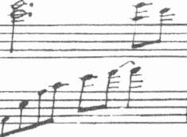
Kate M o s s e
Ahşap kapı ile pervaz arasındaki çatlağa gözünü dayadığı anda Marieta içeriden kapıyı açıp boş tepsiyle dışarı çıktı.
İkisi de hayretle bağırdı.
"Matmazel!"
Gürültünün Anatole'ün dikkatini çekmesini önlemek için Leonie ka-pıyı kapattı.
"Carcassonne'dan gelen bir mektup var mı Marieta?"
Hizmetçi kız meraklı gözlerle ona baktı. "Gözüme çarpmadı, matmazel."
"Emin misin?"
Marieta şaşırmış gibi görünüyordu. "Her zamanki el ilanları, Paris'ten Senyör Anatole için bir mektup ve kasabadan ağabeyinize ve yengenize gelmiş birer mektup vardı."
Leonie rahatlayarak soluğunu bırakırken bir yandan da hayal kırıklı-
ğına uğramıştı.
"Davetiye olduklarını sanıyorum," diye ekledi Marieta. "Zarflar çok kaliteliydi ve çok şık bir yazıyla yazılmıştı. Önemli bir aile arması taşıyordu. Pascal mektupların elden getirildiğini söyledi. Eski bir pelerin giyen garip bir adam getirmiş."
Leonie kalakaldı. "Pelerini ne renkmiş?"
Marieta hayretle ona baktı. "Bilmiyorum matmazel. Pascal söylemedi. Eğer izin verirseniz..."
"Elbette," diyerek geri çekildi Leonie.
Eşikte bir an kararsız kalarak ağabeyinin yanına gitmekten niçin çekindiğini çözemedi. Herhalde kapıldığı suçluluk duygusu mektupların kendisiyle ilgili olduğunu düşünmesine yol açmıştı. Hepsi bu... İyi bir açıklama, diye geçirdi içinden ama hâlâ huzursuzdu.
Arkasını dönüp ses çıkarmadan yukarı koştu.
474
72
O O
Anatole kahvaltı masasında oturmuş görmeyen gözlerle elindeki mektuba bakıyordu.
İkinci sigarasını sürdürmeden üçüncüsünü yaktı. Odanın içi ağır bir sigara dumanıyla kaplıydı. Masanın üstünde üç zarf duruyordu. Henüz açmadığı zarfın üzerinde Paris posta damgası vardı. Diğer ikisi gravürcü Stern'in cam vitrinini süsleyen tipte kabartma bir arma taşıyordu. Aynı soylu ailenin armasını taşıyan mektup önündeki boş tabağın üzerindeydi.
Aslında Anatole bir gün böyle bir mektubun hep kendisine ulaşaca-
ğını düşünürdü. Isolde'e ne kadar güvence vermeye çalışırsa çalışsın, eylül ayında Panorama Pasajı'nda yaşadığı saldırıdan sonra bunu hep beklemişti.
Bir hafta önce Carcassonne'daki otelde ona ulaşan alaycı mektup, Constant'ın aldatmacayı bildiğini ve daha da kötüsü onların peşinde olduğunu teyit etmişti.
Gerçi Anatole, Isolde'ün korkularını gidermeye çalışmıştı, ama genç kadının Constant hakkında anlattıkları neler yapabileceğinden korkmasına yol açmaya yetmişti. Constant'ın hastalığının ilerleyişi, kontrol edemediği siniri, kendisine karşı yanlış yapmış bir kadından intikam almak için elinden geleni ardına koymayacak bir erkek olduğunu gösteriyordu.
Görünürde son derece düzgün ve kibar olmasına karşın incelikle hakaret eden resmi bir dille yazılmış mektuba tekrar baktı. Victor Constant ertesi gün, 31 Ekim Pazar akşamı güneş batarken kendisini düelloya davet ediyordu. Constant tabanca kullanmayı seçmişti. Yasadışı düellonun kim-475
Kate Mosse
senin dikkatini çekmemesi için özel bir mülk olan Domaine de la Cade arazisi içinde en uygun yeri seçmeyi Vernier'ye bırakmıştı.
Rennes-les-Bains'deki Reine Oteli'nde kaldığını ve onurlu bir erkek gibi bu meydan okumayı kabul ettiğini bildiren yanıtını beklediğini de eklemişti.
Montmartre Mezarlığı'nda elindeki kozu oynadığı için Anatole ilk kez pişmanlık duymuyordu. Mezarlıkta Constant'ın varlığını hissetmişti.
Arkasını dönüp onu oracıkta vurmamak ve sonuçlarına katlanmamak için tüm gücünü kullanmıştı. Bu sabah mektubu açınca ilk düşüncesi doğruca kasabaya gitmek ve Constant ile yüzleşmek olmuştu.
Ama böylesine kontrolsüz bir karşılık, konuyu kapatmaya yeterli olmazdı.
Uzun bir süre sessizce yemek salonunda oturdu. Sigarası yanıp bitince bir tane daha yaktı, ama kendini içemeyecek kadar bitkin hissediyordu.
Düello için bir yardımcıya gereksinimi vardı; yöreden biri olabilir mi?
Charles Denarnaud'ya sorsa nasıl olur? En azından görmüş geçirmiş bir adamdı. Doktor olarak da Gabignaud'yu çağırabileceğini düşündü. Gerçi genç doktorun böyle bir istek karşısında dehşete düşeceğinden emindi ama reddetmeyeceğini de biliyordu. Isolde'ün sağlığı nedeniyle onunla olan ilişkisi konusunda sırlarını Gabignaud ile paylaşmak zorunda kalmıştı. Bu nedenle kendisi için olmasa bile Isolde için, doktorun böyle bir daveti geri çevirmeyeceğini düşünüyordu.
Tatmin edici bir sonuca ulaşacağına kendini ikna etmeye çabaladı.
Yaralanan Constant, onun elini sıkmak, kan davasının sona erdiğini bildirmek zorunda kalıyor. Her nedense ikna olamıyordu. Düelloyu Anatole kazansa bile, Constant'ın dövüş kurallarına uyacağından emin değildi.
Elbette bu meydan okumayı kabul etmekten başka seçeneği yoktu.
Son bir yıldır bazı davranışları pek onurlu sayılmasa da, Anatole onurlu bir insandı. Eğer Constant ile düelloyu kabul etmezse hiçbir şey değiş-
meyecekti. Isolde, sürekli Constant'ın saldıracağı korkusuyla dayanılmaz bir stres altında yaşayacaktı. Eğer bu daveti reddederse, kendisine ve ya-kınlarına karşı sürdürülen karalama kampanyasının şiddetleneceğini de biliyordu.
476
Tapınak
Son günlerde uşakların bölümünde Domaine de la Cade hakkında bazı öykülerin kasabada dolaştığının dedikodularını duymuştu. Jules Lascombe döneminde çevreyi dehşete boğan canavarın tekrar ortaya çıkmasıyla ilgili rahatsız edici söylentiler vardı. Böyle bir skandalin canlandırılmasının anlamsız olduğunu düşündüğünden üzerinde durmamıştı. Şimdi ise Constant'ın bu işte parmağı olduğundan şüpheleniyordu.
Mektubu avucunda buruşturdu. Çocuğunun, babasının bir korkak ol-duğunu bilerek büyümesine izin veremezdi. Düello davetini kabul etmek zorundaydı. Kazanmak için ateş edecekti.
Öldürmek için...
Anatole parmaklarıyla masada tempo tuttu. Hiçbir şeyden korkmuyordu, ama keskin nişancı olmadığının da farkındaydı. Üstelik tabancadan çok eskrim kılıçları kullanmakta başarılıydı.
Bu düşünceyi bir kenara itti. Bu işi Pascal ya da belki Charles Denarnaud'nun yardımıyla halledebilirdi. Şu anda alması gereken önemli kararlar arasında bu konuyu karısına açıp açmamak da vardı.
Bir sigarayı daha söndürdü. Isolde düelloyu kendiliğinden öğrenebilir mi? Böyle bir haber hastalığının tekrarlamasına neden olup bebeğin sağlığını tehlikeye atabilirdi. Hayır, ona söylemeyecekti. Bu sabah gelen mektuplardan söz etmemesini Marieta'ya bildirecekti.
Constant'ın elyazısıyla Isolde'e gönderilmiş olan mektubu ceketinin göğüs cebine yerleştirdi. Belki durumu çok uzun süre gizleyemeyecekti ama en azından birkaç saatliğine huzurunu korumasını sağlayabilecekti.
Keşke Isolde'ü bir yerlere gönderebilseydi. Yeterli bir açıklama olmadan Domaine de la Cade'dan ayrılmasını istemenin saçmalığını fark edince dudaklarında acı bir gülüş dolaştı. Ona teklif edemeyeceği tek şey olduğundan bu düşünceyi uzatmanın anlamı yoktu.
Sırrını Leonie'ye açıklayıp açıklamamaya karar vermek daha kolaydı.
Anatole sonunda Isolde'ün haklı olduğunu anlamıştı. Kız kardeşine karşı hâlâ küçük bir çocuk gibi davranıyor, genç bir hanım olduğunu kabul edemiyordu. Genellikle onu düşüncesiz davranan, çocuksu, sinirine hâkim olamayan ve çenesini tutamayan ya da tutmak istemeyen biri olarak 477
Kate Mosse
görüyordu. Buna karşılık Isolde'e büyük bir sevgi duyduğunu biliyor ve Carcassonne'dan dönüşlerinden bu yana yengesine olan davranışlarında bunu görebiliyordu.
Leonie ile geçen hafta sonu konuşmaya karar vermişti. Isolde ile yaşadığı aşk ilişkisini başlangıcından bu yana anlatıp şu anda içinde bulundukları durumu açıklamaya zaten niyetlenmişti.
Isolde'ün sağlık durumu bu konuşmayı ertelemişti ama bugün aldığı düello daveti bu sohbetin bir an önce yapılmasını gerekli kılmıştı. Anatole parmaklarıyla masada tempo tutmaya başladı. Evlilik öyküsünü bugün anlatmaya karar verdi. Leonie'nin tepkilerine bakarak düellodan söz edip etmemeye karar verebilirdi.
Tüm mektupları alıp ayağa kalktı ve yemek salonundan hole çıkıp zili çaldı.
Marieta geldi.
"Matmazel Leonie'ye, öğleyin benimle kütüphanede buluşmasını söyler misin? Onunla özel olarak konuşmak istiyorum, bu nedenle kimseye söz etmesin. Bunun çok önemli olduğunu belirt lütfen Marieta. Ayrıca bu sabah gelen postadan Madam Isolde'e söz etme. Ben kendim ona açıklayacağım."
Marieta şaşırmış gibi göründü ama Anatole'ün emirlerini sorgulama-dan yerine getirecekti.
"Pascal nerede?"
Hizmetçi kızın yanakları kızarınca Anatole şaşırdı. "Sanırım mutfakta, senyör."
"On dakika sonra evin arkasında beni beklemesini söyle ona."
Anatole odasına gidip giysilerini değiştirdi. Constant'a kısa ve resmi bir yanıt yazıp, mürekkebi kuruttu, meraklı gözlerden uzak tutmak için zarfı mühürledi. Pascal mektubu öğleden sonra teslim edebilirdi. Artık aklındaki tek düşünce, Isolde ve bebeği için, mermiyi nasıl isabet ettire-ceğiydi.
Paris'ten gelen mektup açılmadan yeleğinin cebinde duruyordu.
478
Tapınak
Leonie yatak odasında bir aşağı bir yukarı yürüyüp Anatole'ün niçin kendisini özel olarak görmek istediğini düşünüyordu. Acaba oynadığı oyunu mu keşfetmişti? Ya da Pascal'ı gönderip kasabadan yalnız geldiğini mi öğrenmişti?
Açık pencerenin altından gelen sesler dikkatini çekti. Ellerini taş
pervaza dayayıp eğilince Anatole ile elinde uzun ahşap bir kutu taşıyan Pascal'ın bahçede yürüdüklerini gördü. Bir tabanca kutusunu andırıyordu.
Gerçi Leonie evde silah görmemişti, ama amcasının bazı silahları olduğu-nu varsayıyordu.
Acaba ava mı çıkıyorlar?
Ava gitmediklerini düşününce kaşları çatıldı. Anatole'ün üzerinde av kıyafetleri yoktu. Üstelik ellerinde tüfek değil yalnızca tabanca vardı.
Adlandıramadığı için daha da artan bir korku bir anda tüm benliğini sardı. Şapkasını, ceketini kaptı ve çizmelerini geçirdi. Ağabeyini takip edecekti.
Sonra durakladı.
Anatole sık sık onu düşünmeden hareket etmekle suçlardı. Bomboş
oturup beklemek Leonie'nin karakterine aykırıydı, ama ağabeyini izlemenin ne yararı olacaktı? Eğer masum bir amaçla yola çıkmışsa Leonie'nin evcil bir köpek gibi peşinden gitmesi, en azından onu kızdıracaktı. Öğleyin kız kardeşiyle görüşmek istediğine göre uzağa gidiyor olamazdı. Şömine rafındaki saate baktı. İki saati vardı.
Şapkasını yatağın üzerine fırlattı, ayakkabılarını çıkardı ve etrafına bakındı. En iyisi öğle saatindeki buluşmaya kadar odasında oturup uğraşacak bir şeyler bulmaktı.
Boya malzemelerine baktı. Bir an durakladı ve çalışma masasına gidip kâğıtlarıyla fırçalarını açtı. Resimlerine devam etmek için ideal bir fırsat çıkmıştı karşısına. Tamamlaması gereken üç tane daha vardı.
Fırçasını ıslatıp siyah boyayla tapınaktaki sekiz tablonun altıncısının dış hatlarını çizmeye başladı.
Kart XVI: Kule
479
72
O O
Rennes-les-Bains'deki Reine Oteli'nin birinci katındaki özel salonda iki erkek rutubetli sabahın soğuğunu alması için yakılmış şöminenin kar-
şısında oturuyordu. Biri Parisli diğeri Carcassonne'lu iki uşak saygılı bir mesafede duruyor ve beyefendiler kendilerine doğru bakmadığı zamanlar birbirlerini şüpheyle süzüyorlardı.
"Bu işte sizin hizmetinizi isteyeceğinden emin misiniz?"
Bir gece önce içtiği kaliteli brendiden dolayı hâlâ yüzü kırmızı olan Charles Denarnaud pahalı purosundan yapraklar yanıncaya kadar derin bir nefes çekti. Lekeli yüzünde bir kendini beğenmişlik ifadesi okunuyordu.
Başını arkaya atıp tavana doğru beyaz bir duman halkası üfledi.
"Bana katılmayacağınızdan emin misiniz Constant?"
Victor Constant kızarmış cildini gizleyen eldivenli elini kaldırdı. Bu sabah kendini iyi hissetmiyordu. Avın neredeyse sonuna yaklaştığını bilmek sinirlerini altüst etmişti.
"Vernier'nin sizden rica edeceğinden emin misiniz?" diye tekrarladı.
Constant'ın sesindeki sertliği işiten Denarnaud yerinde doğruldu. "Bu adam konusunda yanıldığımı sanmıyorum," dedi aceleyle karşısındakini küçümsemiş gibi davrandığını fark ederek. "Rennes-les-Bains'de Vernier'nin pek fazla tanıdığı olmadığı gibi böyle bir konuda yardım alacağı kimse de yok. Benimle görüşeceğinden eminim. Zamansızlık nedeniyle daha uzaklardan birine başvurması olanaksız."
480
Tapınak
"Doğru," dedi Constant kupkuru bir sesle.
"Sanırım tıp adamı olarak kasabanın doktorlarından Gabignaud'nun hazır bulunmasını isteyecektir."
Constant başını salladı. Kapıya yakın duran uşağa döndü.
"Mektuplar bu sabah teslim edildi mi?"
"Evet beyefendi."
"Ev halkına kimliğini açıklamadın değil mi?"
Adam başım salladı. "Bu sabahki postayla birlikte verilmesi için uşa-
ğa teslim ettim."
Constant bir an düşündü. "Ortalıkta dolaşan söylentilerin kaynağının sen olduğunu bilen biri var mı?"
"Jules Lascombe'un uyandırdığı canavarın tekrar görüldüğü hakkındaki bir iki lafı ortaya yaymaya hevesli birkaç kişiye fısıldadım. Hainlik ve batıl inançlar gerisini halletti. Yaşanan fırtınalar her şeyin yolunda gitmediğinin kanıtı olarak görüldü."
"Mükemmel," diyerek eliyle işaret etti Constant. "Domaine de la Cade arazisine git ve Vernier'yi gözetle. Güneş batarken rapor ver."
"Pekâlâ beyefendi."
Napolyon tarzı mavi pelerini iskemlenin üzerinden alıp sarındı ve kapıya doğru geri geri yürüyüp bulutlu sokağa çıktı.
Kapının kapanma sesini duyan Constant ayağa kalktı.
"Bu konunun bir an önce fazla dikkat çekmeden çözümlenmesini istiyorum Denarnaud. Anlaşıldı mı?"
Görüşmenin ani bir biçimde sona ermesine şaşıran Denarnaud ayağa kalktı.
"Elbette beyefendi. Her şey kontrol altında."
Constant parmağını şaklattı. Özel uşağı elinde bir keseyle yaklaştı.
Adamın hastalıklı yüzü ve cildini gören Denarnaud elinde olmadan bir adım geriledi.
"Size söz verilenin yarısı," dedi Constant parayı uzatarak. "İş benim istediğim gibi bitince, geri kalanını alacaksınız. Beni anlıyorsunuz değil mi?"
481
F: 31
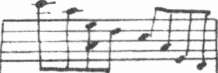
Kate Mosse
Denarnaud'nun açgözlü elleri keseyi kaptı.
"Üzerimde başka bir silah bulunmadığını teyit edeceksiniz," dedi Constant soğuk, sert bir sesle. "Bu noktayı açıkça biliyorsunuz."
"Her birinde birer mermi bulunan bir çift düello tabancası olacak. Eğer üzerinizde başka bir silah varsa bile, ben onu fark etmeyeceğim." Sırnaşık bir gülüşle baktı. "Yine de sizin gibi bir beyefendinin ilk atışta başarılı olamayacağına inanmıyorum."
Constant, bu yaltaklanmaya küçümseyerek baktı.
"Asla ıskalamam."
482
72
O O
"Lanet olsun, cehenneme kadar yolu var," diye haykırdı Anatole topu-
ğuyla toprağı tekmelerken.
Pascal ormanın bir açıklığında, yabanıl ardıç çalılarının arasında oluşturduğu derme çatma atış alanına doğru yürüdü. Şişeleri tekrar sıraya dizdi, Anatole'ün yanına döndü ve tabancayı doldurdu.
Altı atışın ikisini ıskalamış, biri bir kayın ağacının gövdesine, ikincisi ahşap çite saplanmış, titreşimler üç şişeyi devirmişti. Yalnızca bir mermi hedef olan şişeye isabet edip kalın camı sıyırmıştı.
"Bir daha deneyin efem," dedi Pascal sakin bir sesle. "Bakışınızı sabit tutun."
"Ben de bunu yapıyorum," diye homurdandı Anatole sinirlenerek.
"Gözünüzü hedefe kadar kaldırın ve tekrar aşağıya bakın. Namludan çıkan merminin yolunu hayal edin." Pascal biraz uzaklaştı. "Kımıldamayın efem. Nişan alın. Acele etmeyin."
Anatole kolunu kaldırdı. Bu kez karşısındaki hedefi içtiği biranın şi-
şesi değil Victor Constant olarak hayal etti.
"Şimdi," dedi Pascal usulca. "Sakin olun kımıldamayın. Ateş."
Anatole tam ortasından vurdu. Şişe patlayıp tıpkı ucuz bir havai fişek gibi dağıldı. Ağaçların gövdelerinde yankılanan ses kuşların korku içinde yuvalarından uçmalarına neden oldu.
Namlunun ucundan minik bir duman bulutu çıktı. Anatole dumanı üfledi ve gözleri mutlulukla parlayarak Pascal'a döndü.
483
Kate M o s s e
"İyi atıştı," dedi uşak. Ablak, heyecansız yüzü ilk kez düşüncelerini yansıtıyordu. "Ve... bu düello ne zaman olacak?"
Anatole'ün yüzündeki gülümseme silindi. "Yarın gün batarken."
Pascal hedefe yaklaşıp sağlam kalan şişeleri tekrar sıraya dizdi. "Bakalım ikinci kez vurabilecek misiniz efem?"
"Tanrı izin verirse, bir tek kez ateş edeceğim," dedi Anatole kendi kendine.
Yine de tüm şişeler kırılıp ormanı barut, mermi ve bayat bira kokusu sarıncaya kadar Pascal'ın tabancayı doldurmasına izin verdi.
§ 01 j/f
§ rrfl f
484
72
O O
Saat tam on ikiye beş kala Leonie odasından çıkıp koridoru geçti ve aşağıya indi. Duygularına hâkim, serinkanlı bir görünümü vardı, ama kalbi tıpkı bir oyuncak askerin teneke trampeti gibi çarpıyordu.
Geniş holü geçerken topukları evin sessizliğinde uğursuz bir gü-
rültüyle yere basar gibiydi. Ellerine bakınca tırnaklarında hâlâ yeşil ve siyah boya lekelerinin olduğunu gördü. Sabah saatlerini kaygılı bir şekilde geçirmiş olmasına rağmen Kule tablosunu bitirmiş ama tatmin olmamıştı.
Ağaçların yapraklarını ne kadar hafif boyasa ya da gökyüzünü ne kadar renklendirmeye çalışsa da fırça izlerinde irkiltici ve kasvetli bir hava göze çarpıyordu.
Kütüphane kapısına giden dar koridordaki vitrinlerin önünden geçti.
Ağabeyiyle yapacağı konuşmaya öylesine odaklanmıştı ki cam vitrinlerde-ki madalyalar, biblolar, anı eşyaları dikkatini bile çekmedi.
Eşikte bir süre bekledi ve çenesini kaldırıp şu an olduğundan daha cesur davranarak kapıya vurdu.
"Gel."
Anatole'ün sesini duyunca kapıyı açıp içeri girdi.
"Beni görmek istemişsin?" diye sorarken sanki sevgili ağabeyinin değil de bir yargıcın karşısına çıkıyormuş gibiydi.
"Evet," diye gülümsedi Anatole. Yüz ifadesi ve kahverengi gözlerinin bakışı genç kızı rahatlattı, ama öte yandan ağabeyinin de kaygılı olduğunu hissediyordu. "İçeri gir Leonie. Gel otur."
485
Kate Mosse
"Beni korkutuyorsun Anatole," dedi alçak sesle. "Çok ciddi görünü-
yorsun."
Anatole elini kız kardeşinin omzuna atıp, goblen minderli iskemleye götürdü. "Seninle çok ciddi bir konuda konuşmam gerekiyor."
Oturması için iskemleyi çekti, biraz uzaklaştı ve ellerini arkasında kavuşturup kardeşine baktı. Ağabeyinin parmaklarının arasında bir zarf olduğunu fark etti Leonie.
"Nedir bu?" diye sorarken en kötü korkularının gerçekleşmiş olaca-
ğını düşünerek bir an sarsıldı. Ya Mösyö Constant herhangi bir şekilde ev adresini öğrenip buraya mektup yazdıysa? "Elindeki mektup annemden mi geliyor, Paris'ten mi?"
Aklından uçup giden bir şeyi bir anda anımsamış gibi Anatole'ün yüzünde tuhaf bir ifade dolaştı ve kayboldu.
"Hayır... Yani... bu da bir mektup, ama benim sana yazdığım bir mektup."
Bir an bir şeylerin yolunda olmadığını düşündü. "Bana mı?"
Anatole eliyle saçlarını düzeltip içini çekti. "Kendimi oldukça garip hissediyorum," dedi alçak sesle. "Konuşmamız gereken bazı konular var ama, şu anda karşında kendimi âciz, dili tutulmuş gibi hissediyorum."
Leonie güldü. "Nasıl olabilir bu? Benim karşımda olmaktan utanç duymadığına eminim."
Şaka yapmak istemişti, ama Anatole'ün yüzündeki ciddi ifade dudak-larmdaki gülüşü dondurdu. Yerinden fırlayıp ona doğru koştu.
"Konu nedir? Annem mi? Isolde mü?"
Anatole elindeki mektuba baktı. "İtirafımı kâğıda dökmeyi yeğledim."
"İtiraf mı?"
"Bu mektupta seninle çok daha önce paylaşmış olmam gereken bazı bilgiler var. Isolde paylaşmak istedi, ama ben buna izin vermedim."
"Anatole," diye bağırdı kolunu sarsarak. "Anlat bana."
"Yalnız başına okusan daha iyi olur. Şimdi çok ciddi bir durum oluştu ve benim derhal ilgilenmem gerekiyor. Üstelik senin yardımın da şart."
Kolunu Leonie'nin küçük elinden kurtarıp mektubu uzattı.
"Umarım beni bağışlarsın," dedi sesi çatlayarak. "Ben dışarıda bekleyeceğim."
486